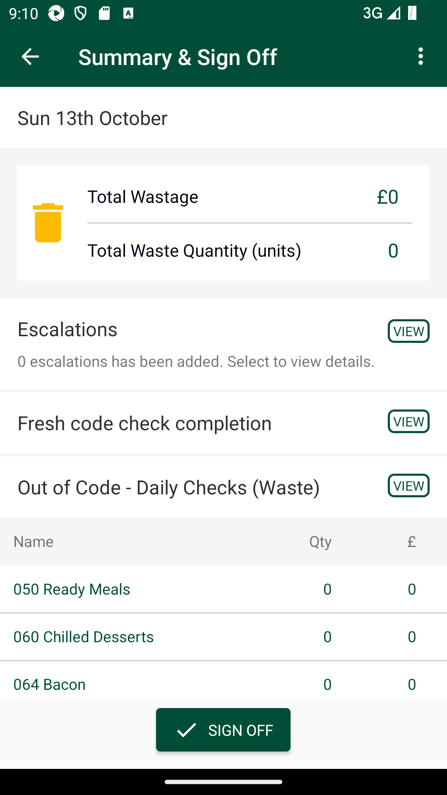
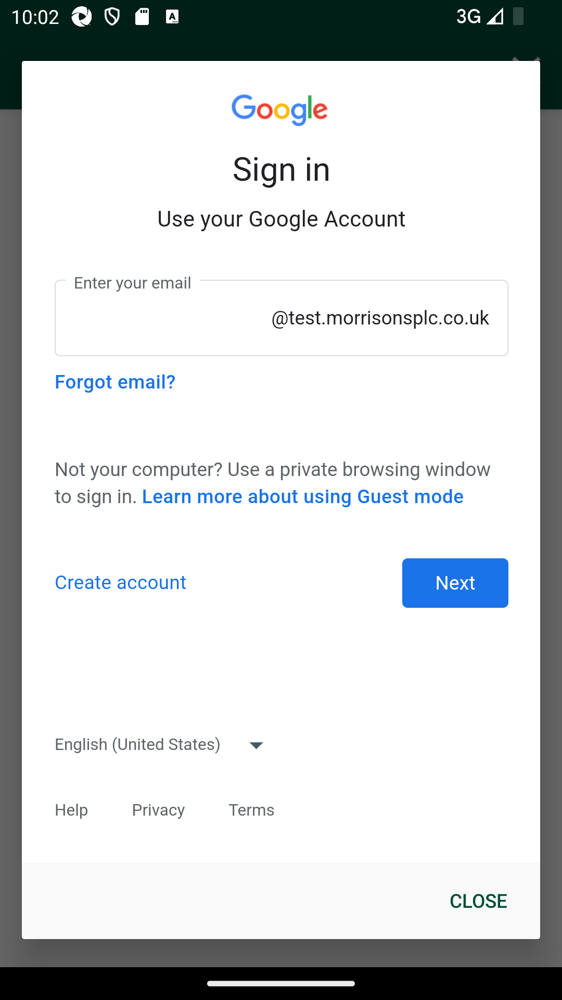
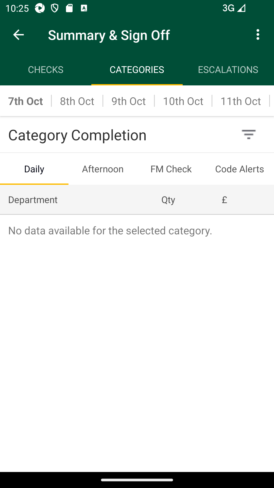
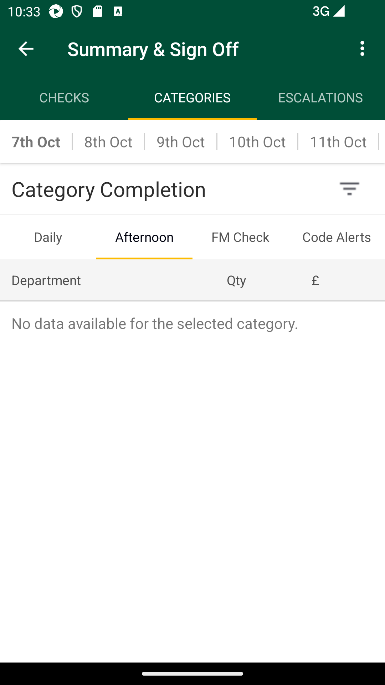
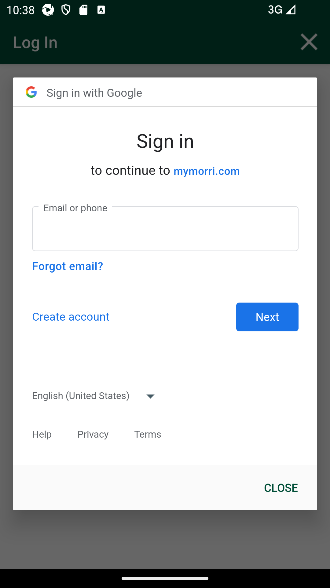
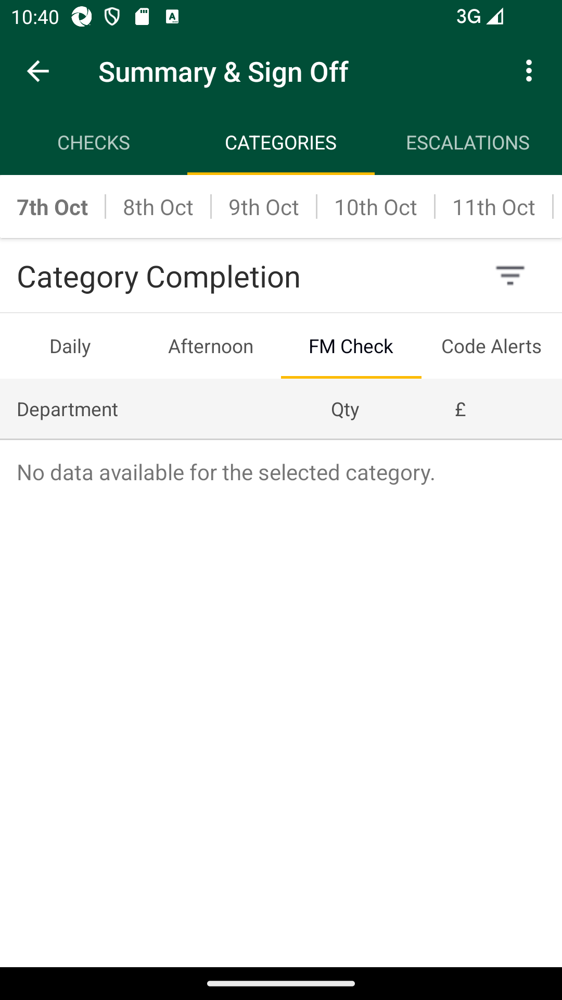

-
Verify Fresh Food Manager Check Summary & Sign Off Screen (Phase2)
2:21:28 PM / 01:40:14:394 Fail
Verify Fresh Food Manager Check Summary & Sign Off Screen (Phase2)
10.14.2024 2:21:28 PM 10.14.2024 4:01:43 PM 01:40:14:394 · #test-id=1@regression @NewfccSummaryPassUAT_19Verify Current Day 'Fresh Food Manager Check' Summary & Sign Off PagePassUAT_19Verify Current Day 'Fresh Food Manager Check' Summary & Sign Off PageWhen I enter Username and Password for SMA Manager userAnd I click on login button for SMAThen I click on the main menu "Code Checking"Then I click on "Fresh Code Check"Then I click on "Daily Schedule"Then I Scroll down on Daily schedule pageAnd I Select Daily schedule for "Current Date"Then I click on "Fresh Food Manager Check"Then I click on "Summary & Sign Off"And I verify Total wastage, wastage amount in pound is displayedAnd I verify Escalations and below text is displayedAnd I verify "Fresh code check completion" is displayedAnd I verify "Out of Code - Daily Checks (Waste)" is displayedAnd I verify department name,wastage qty and amount is displayedFailUAT_20Verify 'Overdue' status for past date 'Fresh Food Manager Check' Summary & Sign Off PageFailUAT_20Verify 'Overdue' status for past date 'Fresh Food Manager Check' Summary & Sign Off PageWhen I enter Username and Password for SMA Manager userAnd I click on login button for SMAThen I click on the main menu "Code Checking"Then I click on "Fresh Code Check"Then I click on "Daily Schedule"And I click past day datecom.morrisons.common.action.Hook.afterScenario(io.cucumber.java.Scenario)Then I click on "Fresh Food Manager Check"Step skippedThen I click on "Summary & Sign Off"Step skippedAnd I verify status as "Overdue"Step skippedFailUAT_21Verify 'Awaiting Sign-Off/Inprogress' status for Current Day 'Fresh Food Manager Check' Summary & Sign Off PageFailUAT_21Verify 'Awaiting Sign-Off/Inprogress' status for Current Day 'Fresh Food Manager Check' Summary & Sign Off PageWhen I enter Username and Password for SMA Manager userAnd I click on login button for SMAThen I click on the main menu "Code Checking"Then I click on "Fresh Code Check"Then I click on "Daily Schedule"Then I Scroll down on Daily schedule pageAnd I Select Daily schedule for "Current Date"Then I click on "Fresh Food Manager Check"Then I click on "Summary & Sign Off"And I verify status as "In Progress"com.morrisons.common.action.Hook.afterScenario(io.cucumber.java.Scenario)
FailUAT_22Verify 'Total Wastage' Amount in '£' Pounds for yesterday date in 'Fresh Food Manager Check' Summary & Sign Off PageFailUAT_22Verify 'Total Wastage' Amount in '£' Pounds for yesterday date in 'Fresh Food Manager Check' Summary & Sign Off PageWhen I enter Username and Password for SMA Manager userAnd I click on login button for SMAThen I click on the main menu "Code Checking"Then I click on "Fresh Code Check"Then I click on "Daily Schedule"And I click past "2" day datecom.morrisons.common.action.Hook.afterScenario(io.cucumber.java.Scenario)Then I click on "Fresh Food Manager Check"Step skippedThen I click on "Summary & Sign Off"Step skippedAnd I verify Total wastage, wastage amount in pound is displayedStep skippedFailUAT_23Verify 'Escalations' raised yesterday date in 'Fresh Food Manager Check' Summary & Sign Off PageFailUAT_23Verify 'Escalations' raised yesterday date in 'Fresh Food Manager Check' Summary & Sign Off PageWhen I enter Username and Password for SMA Manager userAnd I click on login button for SMAThen I click on the main menu "Code Checking"Then I click on "Fresh Code Check"Then I click on "Daily Schedule"Then I Scroll down on Daily schedule pageAnd I Select Daily schedule for "Current Date"Then I click on "Fresh Food Manager Check"Then I click on "Summary & Sign Off"And I verify Escalations and below text is displayedThen I click on "Escalations"And I verify escalations listed with View/IncompleteStep undefinedFailUAT_24Verify Manager 'Complete' escalations which as been done yesterday from Daily Checks and Afternoon Checks by completing the department with poor rotation ratingFailUAT_24Verify Manager 'Complete' escalations which as been done yesterday from Daily Checks and Afternoon Checks by completing the department with poor rotation ratingWhen I enter Username and Password for SMA Manager userAnd I click on login button for SMAThen I click on the main menu "Code Checking"Then I click on "Fresh Code Check"Then I click on "Daily Schedule"And I click past "2" day datecom.morrisons.common.action.Hook.afterScenario(io.cucumber.java.Scenario)Then I click on "Fresh Food Manager Check"Step skippedThen I click on "Summary & Sign Off"Step skippedAnd I verify Escalations and below text is displayedStep skippedThen I click on "Escalations"Step skippedAnd I open "INCOMPLETE" status escalationStep skippedAnd I verify Next steps Page HeaderStep skippedAnd I verify Aisle InformationStep skippedAnd I verify Details of Problem FoundStep skippedThen I click on "COMPLETE ESCALATION"Step skippedAnd I verify prompt for next stepStep skippedAnd I verify and select Investigation detailsStep skippedAnd I verify and select Next StepsStep skippedAnd I verify redirection to escalation listStep skippedFailUAT_27Verify Manager allowed to 'Add' new Escalations in FM check 'Fixture' location for product levelFailUAT_27Verify Manager allowed to 'Add' new Escalations in FM check 'Fixture' location for product levelWhen I enter Username and Password for SMA Manager userAnd I click on login button for SMAThen I click on the main menu "Code Checking"Then I click on "Fresh Code Check"Then I click on "Daily Schedule"And I click past "2" day datecom.morrisons.common.action.Hook.afterScenario(io.cucumber.java.Scenario)Then I click on "Fresh Food Manager Check"Step skippedThen I click on "Summary & Sign Off"Step skippedAnd I verify Escalations and below text is displayedStep skippedThen I click on "VIEW"Step skippedThen I click on "ADD NEW ESCALATION"Step skippedThen I click on "Fresh Food Manager Check"Step skippedThen I click on "Fixture"Step skippedAnd I click on "Aisle 0"Step skippedAnd I click on product levelStep skippedAnd I select Details of Problem FoundStep skippedAnd I verify and select Investigation detailsStep skippedAnd I verify and select Next StepsStep skippedAnd I verify redirection to escalation listStep skippedFailUAT_28Verify Manager allowed to 'Add' new Escalations in FM check 'Fixture' location for Department levelFailUAT_28Verify Manager allowed to 'Add' new Escalations in FM check 'Fixture' location for Department levelWhen I enter Username and Password for SMA Manager userAnd I click on login button for SMAThen I click on the main menu "Code Checking"Then I click on "Fresh Code Check"Then I click on "Daily Schedule"And I click past "2" day datecom.morrisons.common.action.Hook.afterScenario(io.cucumber.java.Scenario)Then I click on "Fresh Food Manager Check"Step skippedThen I click on "Summary & Sign Off"Step skippedAnd I verify Escalations and below text is displayedStep skippedThen I click on "VIEW"Step skippedThen I click on "ADD NEW ESCALATION"Step skippedThen I click on "Fresh Food Manager Check"Step skippedThen I click on "Fixture"Step skippedAnd I click on "Aisle 0"Step skippedAnd I click on product and department levelStep skippedAnd I select Details of Problem FoundStep skippedAnd I verify and select Investigation detailsStep skippedAnd I verify and select Next StepsStep skippedAnd I verify redirection to escalation listStep skippedFailUAT_29Verify Manager allowed to 'Add' new Escalations in FM check 'Promotions' location for Product levelFailUAT_29Verify Manager allowed to 'Add' new Escalations in FM check 'Promotions' location for Product levelWhen I enter Username and Password for SMA Manager userAnd I click on login button for SMAThen I click on the main menu "Code Checking"Then I click on "Fresh Code Check"Then I click on "Daily Schedule"And I click past "2" day datecom.morrisons.common.action.Hook.afterScenario(io.cucumber.java.Scenario)Then I click on "Fresh Food Manager Check"Step skippedThen I click on "Summary & Sign Off"Step skippedAnd I verify Escalations and below text is displayedStep skippedThen I click on "VIEW"Step skippedThen I click on "ADD NEW ESCALATION"Step skippedThen I click on "Fresh Food Manager Check"Step skippedThen I click on "Promotions"Step skippedAnd I click on product levelStep skippedAnd I select Details of Problem FoundStep skippedAnd I verify and select Investigation detailsStep skippedAnd I verify and select Next StepsStep skippedAnd I verify redirection to escalation listStep skippedFailUAT_30Verify Manager allowed to 'Add' new Escalations in FM check 'Promotions' location for Department levelFailUAT_30Verify Manager allowed to 'Add' new Escalations in FM check 'Promotions' location for Department levelWhen I enter Username and Password for SMA Manager userAnd I click on login button for SMAThen I click on the main menu "Code Checking"Then I click on "Fresh Code Check"Then I click on "Daily Schedule"And I click past "2" day datecom.morrisons.common.action.Hook.afterScenario(io.cucumber.java.Scenario)Then I click on "Fresh Food Manager Check"Step skippedThen I click on "Summary & Sign Off"Step skippedAnd I verify Escalations and below text is displayedStep skippedThen I click on "VIEW"Step skippedThen I click on "ADD NEW ESCALATION"Step skippedThen I click on "Fresh Food Manager Check"Step skippedThen I click on "Promotions"Step skippedAnd I click on product and department levelStep skippedAnd I select Details of Problem FoundStep skippedAnd I verify and select Investigation detailsStep skippedAnd I verify and select Next StepsStep skippedAnd I verify redirection to escalation listStep skippedFailUAT_31Verify Manager allowed to 'Add' new Escalations in FM check 'Warehouse' location for Product levelFailUAT_31Verify Manager allowed to 'Add' new Escalations in FM check 'Warehouse' location for Product levelWhen I enter Username and Password for SMA Manager userAnd I click on login button for SMAThen I click on the main menu "Code Checking"Then I click on "Fresh Code Check"Then I click on "Daily Schedule"And I click past "2" day datecom.morrisons.common.action.Hook.afterScenario(io.cucumber.java.Scenario)Then I click on "Fresh Food Manager Check"Step skippedThen I click on "Summary & Sign Off"Step skippedAnd I verify Escalations and below text is displayedStep skippedThen I click on "VIEW"Step skippedThen I click on "ADD NEW ESCALATION"Step skippedThen I click on "Fresh Food Manager Check"Step skippedThen I click on "Warehouse"Step skippedAnd I click on product levelStep skippedAnd I select Details of Problem FoundStep skippedAnd I verify and select Investigation detailsStep skippedAnd I verify and select Next StepsStep skippedAnd I verify redirection to escalation listStep skippedFailUAT_32Verify Manager allowed to 'Add' new Escalations in FM check 'Warehouse' location for Department levelFailUAT_32Verify Manager allowed to 'Add' new Escalations in FM check 'Warehouse' location for Department levelWhen I enter Username and Password for SMA Manager userAnd I click on login button for SMAThen I click on the main menu "Code Checking"Then I click on "Fresh Code Check"Then I click on "Daily Schedule"And I click past "2" day datecom.morrisons.common.action.Hook.afterScenario(io.cucumber.java.Scenario)Then I click on "Fresh Food Manager Check"Step skippedThen I click on "Summary & Sign Off"Step skippedAnd I verify Escalations and below text is displayedStep skippedThen I click on "VIEW"Step skippedThen I click on "ADD NEW ESCALATION"Step skippedThen I click on "Fresh Food Manager Check"Step skippedThen I click on "Warehouse"Step skippedAnd I click on product and department levelStep skippedAnd I select Details of Problem FoundStep skippedAnd I verify and select Investigation detailsStep skippedAnd I verify and select Next StepsStep skippedAnd I verify redirection to escalation listStep skippedFailUAT_33Verify Manager allowed to 'Add' new Escalations in FM check ' Critical Checks ' location for Department levelFailUAT_33Verify Manager allowed to 'Add' new Escalations in FM check ' Critical Checks ' location for Department levelWhen I enter Username and Password for SMA Manager userAnd I click on login button for SMAThen I click on the main menu "Code Checking"Then I click on "Fresh Code Check"Then I click on "Daily Schedule"And I click past "2" day datecom.morrisons.common.action.Hook.afterScenario(io.cucumber.java.Scenario)Then I click on "Fresh Food Manager Check"Step skippedThen I click on "Summary & Sign Off"Step skippedAnd I verify Escalations and below text is displayedStep skippedThen I click on "VIEW"Step skippedThen I click on "ADD NEW ESCALATION"Step skippedThen I click on "Fresh Food Manager Check"Step skippedThen I click on "Critical Checks"Step skippedAnd I click on product and department levelStep skippedAnd I select Details of Problem FoundStep skippedAnd I verify and select Investigation detailsStep skippedAnd I verify and select Next StepsStep skippedAnd I verify redirection to escalation listStep skippedFailUAT_34Verify Manager allowed to 'Add' new Escalations in FM check ' Critical Checks ' location for Product levelFailUAT_34Verify Manager allowed to 'Add' new Escalations in FM check ' Critical Checks ' location for Product levelWhen I enter Username and Password for SMA Manager userAnd I click on login button for SMAThen I click on the main menu "Code Checking"Then I click on "Fresh Code Check"Then I click on "Daily Schedule"And I click past "2" day datecom.morrisons.common.action.Hook.afterScenario(io.cucumber.java.Scenario)Then I click on "Fresh Food Manager Check"Step skippedThen I click on "Summary & Sign Off"Step skippedAnd I verify Escalations and below text is displayedStep skippedThen I click on "VIEW"Step skippedThen I click on "ADD NEW ESCALATION"Step skippedThen I click on "Fresh Food Manager Check"Step skippedThen I click on "Critical Checks"Step skippedAnd I click on product levelStep skippedAnd I select Details of Problem FoundStep skippedAnd I verify and select Investigation detailsStep skippedAnd I verify and select Next StepsStep skippedAnd I verify redirection to escalation listStep skippedFailUAT_35Verify Manager allowed to 'Add' new Escalations in Afternoon Checks 'Fixture' location for product levelFailUAT_35Verify Manager allowed to 'Add' new Escalations in Afternoon Checks 'Fixture' location for product levelWhen I enter Username and Password for SMA Manager userAnd I click on login button for SMAThen I click on the main menu "Code Checking"Then I click on "Fresh Code Check"Then I click on "Daily Schedule"And I click past "2" day datecom.morrisons.common.action.Hook.afterScenario(io.cucumber.java.Scenario)Then I click on "Fresh Food Manager Check"Step skippedThen I click on "Summary & Sign Off"Step skippedAnd I verify Escalations and below text is displayedStep skippedThen I click on "VIEW"Step skippedThen I click on "ADD NEW ESCALATION"Step skippedThen I click on "Afternoon Checks"Step skippedThen I click on "Fixture"Step skippedAnd I click on "Aisle 70"Step skippedAnd I click on product levelStep skippedAnd I select Details of Problem FoundStep skippedAnd I verify and select Investigation detailsStep skippedAnd I verify and select Next StepsStep skippedAnd I verify redirection to escalation listStep skippedFailUAT_36Verify Manager allowed to 'Add' new Escalations in Afternoon Checks 'Fixture' location for Department levelFailUAT_36Verify Manager allowed to 'Add' new Escalations in Afternoon Checks 'Fixture' location for Department levelWhen I enter Username and Password for SMA Manager userAnd I click on login button for SMAThen I click on the main menu "Code Checking"Then I click on "Fresh Code Check"Then I click on "Daily Schedule"And I click past "2" day datecom.morrisons.common.action.Hook.afterScenario(io.cucumber.java.Scenario)Then I click on "Fresh Food Manager Check"Step skippedThen I click on "Summary & Sign Off"Step skippedAnd I verify Escalations and below text is displayedStep skippedThen I click on "VIEW"Step skippedThen I click on "ADD NEW ESCALATION"Step skippedThen I click on "Afternoon Checks"Step skippedThen I click on "Fixture"Step skippedAnd I click on "Aisle 70"Step skippedAnd I click on product and department levelStep skippedAnd I select Details of Problem FoundStep skippedAnd I verify and select Investigation detailsStep skippedAnd I verify and select Next StepsStep skippedAnd I verify redirection to escalation listStep skippedFailUAT_37Verify Manager allowed to 'Add' new Escalations in Afternoon Checks 'Promotions' location for Product levelFailUAT_37Verify Manager allowed to 'Add' new Escalations in Afternoon Checks 'Promotions' location for Product levelWhen I enter Username and Password for SMA Manager userAnd I click on login button for SMAThen I click on the main menu "Code Checking"Then I click on "Fresh Code Check"Then I click on "Daily Schedule"And I click past "2" day datecom.morrisons.common.action.Hook.afterScenario(io.cucumber.java.Scenario)Then I click on "Fresh Food Manager Check"Step skippedThen I click on "Summary & Sign Off"Step skippedAnd I verify Escalations and below text is displayedStep skippedThen I click on "VIEW"Step skippedThen I click on "ADD NEW ESCALATION"Step skippedThen I click on "Afternoon Checks"Step skippedThen I click on "Promotions"Step skippedAnd I click on product levelStep skippedAnd I select Details of Problem FoundStep skippedAnd I verify and select Investigation detailsStep skippedAnd I verify and select Next StepsStep skippedAnd I verify redirection to escalation listStep skippedFailUAT_38Verify Manager allowed to 'Add' new Escalations in Afternoon Checks 'Promotions' location for Department levelFailUAT_38Verify Manager allowed to 'Add' new Escalations in Afternoon Checks 'Promotions' location for Department levelWhen I enter Username and Password for SMA Manager userAnd I click on login button for SMAThen I click on the main menu "Code Checking"Then I click on "Fresh Code Check"Then I click on "Daily Schedule"And I click past "2" day datecom.morrisons.common.action.Hook.afterScenario(io.cucumber.java.Scenario)Then I click on "Fresh Food Manager Check"Step skippedThen I click on "Summary & Sign Off"Step skippedAnd I verify Escalations and below text is displayedStep skippedThen I click on "VIEW"Step skippedThen I click on "ADD NEW ESCALATION"Step skippedThen I click on "Afternoon Checks"Step skippedThen I click on "Promotions"Step skippedAnd I click on product and department levelStep skippedAnd I select Details of Problem FoundStep skippedAnd I verify and select Investigation detailsStep skippedAnd I verify and select Next StepsStep skippedAnd I verify redirection to escalation listStep skippedFailUAT_39Verify Manager allowed to 'Add' new Escalations in Afternoon Checks 'Warehouse' location for Product levelFailUAT_39Verify Manager allowed to 'Add' new Escalations in Afternoon Checks 'Warehouse' location for Product levelWhen I enter Username and Password for SMA Manager userAnd I click on login button for SMAThen I click on the main menu "Code Checking"Then I click on "Fresh Code Check"Then I click on "Daily Schedule"And I click past "2" day datecom.morrisons.common.action.Hook.afterScenario(io.cucumber.java.Scenario)Then I click on "Fresh Food Manager Check"Step skippedThen I click on "Summary & Sign Off"Step skippedAnd I verify Escalations and below text is displayedStep skippedThen I click on "VIEW"Step skippedThen I click on "ADD NEW ESCALATION"Step skippedThen I click on "Afternoon Checks"Step skippedThen I click on "Warehouse"Step skippedAnd I click on product levelStep skippedAnd I select Details of Problem FoundStep skippedAnd I verify and select Investigation detailsStep skippedAnd I verify and select Next StepsStep skippedAnd I verify redirection to escalation listStep skippedFailUAT_40Verify Manager allowed to 'Add' new Escalations in Afternoon Checks 'Warehouse' location for Department levelFailUAT_40Verify Manager allowed to 'Add' new Escalations in Afternoon Checks 'Warehouse' location for Department levelWhen I enter Username and Password for SMA Manager userAnd I click on login button for SMAThen I click on the main menu "Code Checking"Then I click on "Fresh Code Check"Then I click on "Daily Schedule"And I click past "2" day datecom.morrisons.common.action.Hook.afterScenario(io.cucumber.java.Scenario)Then I click on "Fresh Food Manager Check"Step skippedThen I click on "Summary & Sign Off"Step skippedAnd I verify Escalations and below text is displayedStep skippedThen I click on "VIEW"Step skippedThen I click on "ADD NEW ESCALATION"Step skippedThen I click on "Afternoon Checks"Step skippedThen I click on "Warehouse"Step skippedAnd I click on product and department levelStep skippedAnd I select Details of Problem FoundStep skippedAnd I verify and select Investigation detailsStep skippedAnd I verify and select Next StepsStep skippedAnd I verify redirection to escalation listStep skippedFailUAT_41Verify Manager allowed to 'Add' new Escalations in Afternoon Checks ' Critical Checks ' location for Department levelFailUAT_41Verify Manager allowed to 'Add' new Escalations in Afternoon Checks ' Critical Checks ' location for Department levelWhen I enter Username and Password for SMA Manager userAnd I click on login button for SMAThen I click on the main menu "Code Checking"Then I click on "Fresh Code Check"Then I click on "Daily Schedule"And I click past "2" day datecom.morrisons.common.action.Hook.afterScenario(io.cucumber.java.Scenario)Then I click on "Fresh Food Manager Check"Step skippedThen I click on "Summary & Sign Off"Step skippedAnd I verify Escalations and below text is displayedStep skippedThen I click on "VIEW"Step skippedThen I click on "ADD NEW ESCALATION"Step skippedThen I click on "Afternoon Checks"Step skippedThen I click on "Critical Checks"Step skippedAnd I click on product and department levelStep skippedAnd I select Details of Problem FoundStep skippedAnd I verify and select Investigation detailsStep skippedAnd I verify and select Next StepsStep skippedAnd I verify redirection to escalation listStep skippedFailUAT_42Verify Manager allowed to 'Add' new Escalations in Afternoon Checks ' Critical Checks ' location for Product levelFailUAT_42Verify Manager allowed to 'Add' new Escalations in Afternoon Checks ' Critical Checks ' location for Product levelWhen I enter Username and Password for SMA Manager userAnd I click on login button for SMAThen I click on the main menu "Code Checking"Then I click on "Fresh Code Check"Then I click on "Daily Schedule"And I click past "2" day datecom.morrisons.common.action.Hook.afterScenario(io.cucumber.java.Scenario)Then I click on "Fresh Food Manager Check"Step skippedThen I click on "Summary & Sign Off"Step skippedAnd I verify Escalations and below text is displayedStep skippedThen I click on "VIEW"Step skippedThen I click on "ADD NEW ESCALATION"Step skippedThen I click on "Afternoon Checks"Step skippedThen I click on "Critical Checks"Step skippedAnd I click on product levelStep skippedAnd I select Details of Problem FoundStep skippedAnd I verify and select Investigation detailsStep skippedAnd I verify and select Next StepsStep skippedAnd I verify redirection to escalation listStep skippedFailUAT_43Verify Manager allowed to 'Add' new Escalations in Daily Checks 'Fixture' location for product levelFailUAT_43Verify Manager allowed to 'Add' new Escalations in Daily Checks 'Fixture' location for product levelWhen I enter Username and Password for SMA Manager userAnd I click on login button for SMAcom.morrisons.common.action.Hook.afterScenario(io.cucumber.java.Scenario)
Then I click on the main menu "Code Checking"Step skippedThen I click on "Fresh Code Check"Step skippedThen I click on "Daily Schedule"Step skippedAnd I click past "2" day dateStep skippedThen I click on "Fresh Food Manager Check"Step skippedThen I click on "Summary & Sign Off"Step skippedAnd I verify Escalations and below text is displayedStep skippedThen I click on "VIEW"Step skippedThen I click on "ADD NEW ESCALATION"Step skippedThen I click on "Daily Checks"Step skippedThen I click on "Fixture"Step skippedAnd I click on "Aisle 22"Step skippedAnd I click on product levelStep skippedAnd I select Details of Problem FoundStep skippedAnd I verify and select Investigation detailsStep skippedAnd I verify and select Next StepsStep skippedAnd I verify redirection to escalation listStep skippedFailUAT_44Verify Manager allowed to 'Add' new Escalations in Daily Checks 'Fixture' location for Department levelFailUAT_44Verify Manager allowed to 'Add' new Escalations in Daily Checks 'Fixture' location for Department levelWhen I enter Username and Password for SMA Manager userAnd I click on login button for SMAThen I click on the main menu "Code Checking"Then I click on "Fresh Code Check"Then I click on "Daily Schedule"And I click past "2" day datecom.morrisons.common.action.Hook.afterScenario(io.cucumber.java.Scenario)Then I click on "Fresh Food Manager Check"Step skippedThen I click on "Summary & Sign Off"Step skippedAnd I verify Escalations and below text is displayedStep skippedThen I click on "VIEW"Step skippedThen I click on "ADD NEW ESCALATION"Step skippedThen I click on "Daily Checks"Step skippedThen I click on "Fixture"Step skippedAnd I click on "Aisle 22"Step skippedAnd I click on product and department levelStep skippedAnd I select Details of Problem FoundStep skippedAnd I verify and select Investigation detailsStep skippedAnd I verify and select Next StepsStep skippedAnd I verify redirection to escalation listStep skippedFailUAT_45Verify Manager allowed to 'Add' new Escalations in Daily Checks 'Promotions' location for Product levelFailUAT_45Verify Manager allowed to 'Add' new Escalations in Daily Checks 'Promotions' location for Product levelWhen I enter Username and Password for SMA Manager userAnd I click on login button for SMAThen I click on the main menu "Code Checking"Then I click on "Fresh Code Check"Then I click on "Daily Schedule"And I click past "2" day datecom.morrisons.common.action.Hook.afterScenario(io.cucumber.java.Scenario)Then I click on "Fresh Food Manager Check"Step skippedThen I click on "Summary & Sign Off"Step skippedAnd I verify Escalations and below text is displayedStep skippedThen I click on "VIEW"Step skippedThen I click on "ADD NEW ESCALATION"Step skippedThen I click on "Daily Checks"Step skippedThen I click on "Promotions"Step skippedAnd I click on product levelStep skippedAnd I select Details of Problem FoundStep skippedAnd I verify and select Investigation detailsStep skippedAnd I verify and select Next StepsStep skippedAnd I verify redirection to escalation listStep skippedFailUAT_46Verify Manager allowed to 'Add' new Escalations in Daily Checks 'Promotions' location for Department levelFailUAT_46Verify Manager allowed to 'Add' new Escalations in Daily Checks 'Promotions' location for Department levelWhen I enter Username and Password for SMA Manager userAnd I click on login button for SMAThen I click on the main menu "Code Checking"Then I click on "Fresh Code Check"Then I click on "Daily Schedule"And I click past "2" day datecom.morrisons.common.action.Hook.afterScenario(io.cucumber.java.Scenario)Then I click on "Fresh Food Manager Check"Step skippedThen I click on "Summary & Sign Off"Step skippedAnd I verify Escalations and below text is displayedStep skippedThen I click on "VIEW"Step skippedThen I click on "ADD NEW ESCALATION"Step skippedThen I click on "Daily Checks"Step skippedThen I click on "Promotions"Step skippedAnd I click on product and department levelStep skippedAnd I select Details of Problem FoundStep skippedAnd I verify and select Investigation detailsStep skippedAnd I verify and select Next StepsStep skippedAnd I verify redirection to escalation listStep skippedFailUAT_47Verify Manager allowed to 'Add' new Escalations in Daily Checks 'Warehouse' location for Product levelFailUAT_47Verify Manager allowed to 'Add' new Escalations in Daily Checks 'Warehouse' location for Product levelWhen I enter Username and Password for SMA Manager userAnd I click on login button for SMAThen I click on the main menu "Code Checking"Then I click on "Fresh Code Check"Then I click on "Daily Schedule"And I click past "2" day datecom.morrisons.common.action.Hook.afterScenario(io.cucumber.java.Scenario)Then I click on "Fresh Food Manager Check"Step skippedThen I click on "Summary & Sign Off"Step skippedAnd I verify Escalations and below text is displayedStep skippedThen I click on "VIEW"Step skippedThen I click on "ADD NEW ESCALATION"Step skippedThen I click on "Daily Checks"Step skippedThen I click on "Warehouse"Step skippedAnd I click on product levelStep skippedAnd I select Details of Problem FoundStep skippedAnd I verify and select Investigation detailsStep skippedAnd I verify and select Next StepsStep skippedAnd I verify redirection to escalation listStep skippedFailUAT_48Verify Manager allowed to 'Add' new Escalations in Daily Checks 'Warehouse' location for Department levelFailUAT_48Verify Manager allowed to 'Add' new Escalations in Daily Checks 'Warehouse' location for Department levelWhen I enter Username and Password for SMA Manager userAnd I click on login button for SMAThen I click on the main menu "Code Checking"Then I click on "Fresh Code Check"Then I click on "Daily Schedule"And I click past "2" day datecom.morrisons.common.action.Hook.afterScenario(io.cucumber.java.Scenario)Then I click on "Fresh Food Manager Check"Step skippedThen I click on "Summary & Sign Off"Step skippedAnd I verify Escalations and below text is displayedStep skippedThen I click on "VIEW"Step skippedThen I click on "ADD NEW ESCALATION"Step skippedThen I click on "Daily Checks"Step skippedThen I click on "Warehouse"Step skippedAnd I click on product and department levelStep skippedAnd I select Details of Problem FoundStep skippedAnd I verify and select Investigation detailsStep skippedAnd I verify and select Next StepsStep skippedAnd I verify redirection to escalation listStep skippedFailUAT_49Verify Manager allowed to 'Add' new Escalations in Daily Checks ' Critical Checks ' location for Department levelFailUAT_49Verify Manager allowed to 'Add' new Escalations in Daily Checks ' Critical Checks ' location for Department levelWhen I enter Username and Password for SMA Manager userAnd I click on login button for SMAThen I click on the main menu "Code Checking"Then I click on "Fresh Code Check"Then I click on "Daily Schedule"And I click past "2" day datecom.morrisons.common.action.Hook.afterScenario(io.cucumber.java.Scenario)Then I click on "Fresh Food Manager Check"Step skippedThen I click on "Summary & Sign Off"Step skippedAnd I verify Escalations and below text is displayedStep skippedThen I click on "VIEW"Step skippedThen I click on "ADD NEW ESCALATION"Step skippedThen I click on "Daily Checks"Step skippedThen I click on "Critical Checks"Step skippedAnd I click on product and department levelStep skippedAnd I select Details of Problem FoundStep skippedAnd I verify and select Investigation detailsStep skippedAnd I verify and select Next StepsStep skippedAnd I verify redirection to escalation listStep skippedFailUAT_50Verify Manager allowed to 'Add' new Escalations in Daily Checks ' Critical Checks ' location for Product levelFailUAT_50Verify Manager allowed to 'Add' new Escalations in Daily Checks ' Critical Checks ' location for Product levelWhen I enter Username and Password for SMA Manager userAnd I click on login button for SMAThen I click on the main menu "Code Checking"Then I click on "Fresh Code Check"Then I click on "Daily Schedule"And I click past "2" day datecom.morrisons.common.action.Hook.afterScenario(io.cucumber.java.Scenario)Then I click on "Fresh Food Manager Check"Step skippedThen I click on "Summary & Sign Off"Step skippedAnd I verify Escalations and below text is displayedStep skippedThen I click on "VIEW"Step skippedThen I click on "ADD NEW ESCALATION"Step skippedThen I click on "Daily Checks"Step skippedThen I click on "Critical Checks"Step skippedAnd I click on product levelStep skippedAnd I select Details of Problem FoundStep skippedAnd I verify and select Investigation detailsStep skippedAnd I verify and select Next StepsStep skippedAnd I verify redirection to escalation listStep skippedFailUAT_51Verify Manager allowed to 'Add' new Escalations in 'Pre-Opening Clearance Bay Checks' locationsFailUAT_51Verify Manager allowed to 'Add' new Escalations in 'Pre-Opening Clearance Bay Checks' locationsWhen I enter Username and Password for SMA Manager userAnd I click on login button for SMAThen I click on the main menu "Code Checking"Then I click on "Fresh Code Check"Then I click on "Daily Schedule"And I click past "2" day datecom.morrisons.common.action.Hook.afterScenario(io.cucumber.java.Scenario)Then I click on "Fresh Food Manager Check"Step skippedThen I click on "Summary & Sign Off"Step skippedAnd I verify Escalations and below text is displayedStep skippedThen I click on "Escalations"Step skippedThen I click on "ADD NEW ESCALATION"Step skippedThen I click on "Pre-Opening Clearance Bay Checks"Step skippedAnd I click on product and department levelStep skippedAnd I select Details of Problem FoundStep skippedAnd I verify and select Investigation detailsStep skippedAnd I verify and select Next StepsStep skippedAnd I verify redirection to escalation listStep skippedFailUAT_52Verify Manager allowed to 'Add' new Escalations in 'Store Close Clearance Bay Checks' locationsFailUAT_52Verify Manager allowed to 'Add' new Escalations in 'Store Close Clearance Bay Checks' locationsWhen I enter Username and Password for SMA Manager userAnd I click on login button for SMAThen I click on the main menu "Code Checking"Then I click on "Fresh Code Check"Then I click on "Daily Schedule"And I click past "2" day datecom.morrisons.common.action.Hook.afterScenario(io.cucumber.java.Scenario)Then I click on "Fresh Food Manager Check"Step skippedThen I click on "Summary & Sign Off"Step skippedAnd I verify Escalations and below text is displayedStep skippedThen I click on "Escalations"Step skippedThen I click on "ADD NEW ESCALATION"Step skippedThen I click on "Store Close Clearance Bay Checks"Step skippedAnd I click on product and department levelStep skippedAnd I select Details of Problem FoundStep skippedAnd I verify and select Investigation detailsStep skippedAnd I verify and select Next StepsStep skippedAnd I verify redirection to escalation listStep skippedFailUAT_83Verify list of product for 'Daily Checks under Categories' in Manager SignOff Summary & Sign Off ScreenFailUAT_83Verify list of product for 'Daily Checks under Categories' in Manager SignOff Summary & Sign Off ScreenWhen I enter Username and Password for SMA Manager userAnd I click on login button for SMAThen I click on the main menu "Code Checking"Then I click on "Fresh Code Check"Then I click on "Manager Summary & Sign Off"Then I click on "Out of Code - Daily Checks (Waste)"Then I click on "Critical Checks"com.morrisons.common.action.Hook.afterScenario(io.cucumber.java.Scenario)
And I verify product list is displayedStep skippedThen I click on "Promotions"Step skippedAnd I verify product list is displayedStep skippedThen I click on "Warehouse"Step skippedAnd I verify product list is displayedStep skippedFailUAT_84Verify list of aisles under Department details for 'Daily Checks under Categories' in Manager SignOff Summary & Sign Off ScreenFailUAT_84Verify list of aisles under Department details for 'Daily Checks under Categories' in Manager SignOff Summary & Sign Off ScreenWhen I enter Username and Password for SMA Manager userAnd I click on login button for SMAThen I click on the main menu "Code Checking"Then I click on "Fresh Code Check"Then I click on "Manager Summary & Sign Off"Then I click on "Out of Code - Daily Checks (Waste)"And I select and verify aisles under Department is displayedcom.morrisons.common.action.Hook.afterScenario(io.cucumber.java.Scenario)FailUAT_85Verify list of product for 'Afternoon Checks under Categories' in Manager SignOff Summary & Sign Off ScreenFailUAT_85Verify list of product for 'Afternoon Checks under Categories' in Manager SignOff Summary & Sign Off ScreenWhen I enter Username and Password for SMA Manager userAnd I click on login button for SMAThen I click on the main menu "Code Checking"Then I click on "Fresh Code Check"Then I click on "Manager Summary & Sign Off"Then I click on "Out of Code - Daily Checks (Waste)"And I click Afternoon Checks tabThen I click on "Critical Checks"com.morrisons.common.action.Hook.afterScenario(io.cucumber.java.Scenario)And I verify product list is displayedStep skippedThen I click on "Promotions"Step skippedAnd I verify product list is displayedStep skippedThen I click on "Warehouse"Step skippedAnd I verify product list is displayedStep skippedFailUAT_86Verify list of aisles under Department details for 'Afternoon Checks under Categories' in Manager SignOff Summary & Sign Off ScreenFailUAT_86Verify list of aisles under Department details for 'Afternoon Checks under Categories' in Manager SignOff Summary & Sign Off ScreenWhen I enter Username and Password for SMA Manager userAnd I click on login button for SMAThen I click on the main menu "Code Checking"Then I click on "Fresh Code Check"Then I click on "Manager Summary & Sign Off"Then I click on "Out of Code - Daily Checks (Waste)"And I click Afternoon Checks tabAnd I select and verify aisles under Department is displayedcom.morrisons.common.action.Hook.afterScenario(io.cucumber.java.Scenario)
FailUAT_87Verify list of product for 'FM Check under Categories' in Manager SignOff Summary & Sign Off ScreenFailUAT_87Verify list of product for 'FM Check under Categories' in Manager SignOff Summary & Sign Off ScreenWhen I enter Username and Password for SMA Manager userAnd I click on login button for SMAcom.morrisons.common.action.Hook.afterScenario(io.cucumber.java.Scenario)
Then I click on the main menu "Code Checking"Step skippedThen I click on "Fresh Code Check"Step skippedThen I click on "Manager Summary & Sign Off"Step skippedThen I click on "Out of Code - Daily Checks (Waste)"Step skippedAnd I click FM check tabStep skippedThen I click on "Critical Checks"Step skippedAnd I verify product list is displayedStep skippedThen I click on "Promotions"Step skippedAnd I verify product list is displayedStep skippedThen I click on "Warehouse"Step skippedAnd I verify product list is displayedStep skippedFailUAT_88Verify list of aisles under Department details for 'FM Check under Categories' in Manager SignOff Summary & Sign Off ScreenFailUAT_88Verify list of aisles under Department details for 'FM Check under Categories' in Manager SignOff Summary & Sign Off ScreenWhen I enter Username and Password for SMA Manager userAnd I click on login button for SMAThen I click on the main menu "Code Checking"Then I click on "Fresh Code Check"Then I click on "Manager Summary & Sign Off"Then I click on "Out of Code - Daily Checks (Waste)"And I click FM check tabAnd I select and verify aisles under Department is displayedcom.morrisons.common.action.Hook.afterScenario(io.cucumber.java.Scenario)
PassUAT_95Verify 'Summary & Sign Off screen' for Store Manager 'weekly sign off' details before confirming the sign offPassUAT_95Verify 'Summary & Sign Off screen' for Store Manager 'weekly sign off' details before confirming the sign offWhen I enter Username and Password for SMA Manager userAnd I click on login button for SMAThen I click on the main menu "Code Checking"Then I click on "Fresh Code Check"Then I click on "Manager Summary & Sign Off"Then I click on "SIGN OFF"And I verify weekly sign off screen details and checkbox displayed
-
io.cucumber.core.exception.CucumberException
27 tests
io.cucumber.core.exception.CucumberException
27 failedStatus Timestamp TestName Fail 14:31:27 PM And I click past "2" day date Verify Fresh Food Manager Check Summary & Sign Off Screen (Phase2).UAT_22Verify 'Total Wastage' Amount in '£' Pounds for yesterday date in 'Fresh Food Manager Check' Summary & Sign Off Page.And I click past "2" day dateFail 14:37:26 PM And I click past "2" day date Verify Fresh Food Manager Check Summary & Sign Off Screen (Phase2).UAT_24Verify Manager 'Complete' escalations which as been done yesterday from Daily Checks and Afternoon Checks by completing the department with poor rotation rating.And I click past "2" day dateFail 14:41:18 PM And I click past "2" day date Verify Fresh Food Manager Check Summary & Sign Off Screen (Phase2).UAT_27Verify Manager allowed to 'Add' new Escalations in FM check 'Fixture' location for product level.And I click past "2" day dateFail 14:43:19 PM And I click past "2" day date Verify Fresh Food Manager Check Summary & Sign Off Screen (Phase2).UAT_28Verify Manager allowed to 'Add' new Escalations in FM check 'Fixture' location for Department level.And I click past "2" day dateFail 14:45:20 PM And I click past "2" day date Verify Fresh Food Manager Check Summary & Sign Off Screen (Phase2).UAT_29Verify Manager allowed to 'Add' new Escalations in FM check 'Promotions' location for Product level.And I click past "2" day dateFail 14:47:12 PM And I click past "2" day date Verify Fresh Food Manager Check Summary & Sign Off Screen (Phase2).UAT_30Verify Manager allowed to 'Add' new Escalations in FM check 'Promotions' location for Department level.And I click past "2" day dateFail 14:51:49 PM And I click past "2" day date Verify Fresh Food Manager Check Summary & Sign Off Screen (Phase2).UAT_31Verify Manager allowed to 'Add' new Escalations in FM check 'Warehouse' location for Product level.And I click past "2" day dateFail 14:53:40 PM And I click past "2" day date Verify Fresh Food Manager Check Summary & Sign Off Screen (Phase2).UAT_32Verify Manager allowed to 'Add' new Escalations in FM check 'Warehouse' location for Department level.And I click past "2" day dateFail 14:55:35 PM And I click past "2" day date Verify Fresh Food Manager Check Summary & Sign Off Screen (Phase2).UAT_33Verify Manager allowed to 'Add' new Escalations in FM check ' Critical Checks ' location for Department level.And I click past "2" day dateFail 14:57:38 PM And I click past "2" day date Verify Fresh Food Manager Check Summary & Sign Off Screen (Phase2).UAT_34Verify Manager allowed to 'Add' new Escalations in FM check ' Critical Checks ' location for Product level.And I click past "2" day dateFail 14:59:30 PM And I click past "2" day date Verify Fresh Food Manager Check Summary & Sign Off Screen (Phase2).UAT_35Verify Manager allowed to 'Add' new Escalations in Afternoon Checks 'Fixture' location for product level.And I click past "2" day dateFail 15:03:08 PM And I click past "2" day date Verify Fresh Food Manager Check Summary & Sign Off Screen (Phase2).UAT_36Verify Manager allowed to 'Add' new Escalations in Afternoon Checks 'Fixture' location for Department level.And I click past "2" day dateFail 15:05:09 PM And I click past "2" day date Verify Fresh Food Manager Check Summary & Sign Off Screen (Phase2).UAT_37Verify Manager allowed to 'Add' new Escalations in Afternoon Checks 'Promotions' location for Product level.And I click past "2" day dateFail 15:09:12 PM And I click past "2" day date Verify Fresh Food Manager Check Summary & Sign Off Screen (Phase2).UAT_38Verify Manager allowed to 'Add' new Escalations in Afternoon Checks 'Promotions' location for Department level.And I click past "2" day dateFail 15:11:17 PM And I click past "2" day date Verify Fresh Food Manager Check Summary & Sign Off Screen (Phase2).UAT_39Verify Manager allowed to 'Add' new Escalations in Afternoon Checks 'Warehouse' location for Product level.And I click past "2" day dateFail 15:13:19 PM And I click past "2" day date Verify Fresh Food Manager Check Summary & Sign Off Screen (Phase2).UAT_40Verify Manager allowed to 'Add' new Escalations in Afternoon Checks 'Warehouse' location for Department level.And I click past "2" day dateFail 15:15:24 PM And I click past "2" day date Verify Fresh Food Manager Check Summary & Sign Off Screen (Phase2).UAT_41Verify Manager allowed to 'Add' new Escalations in Afternoon Checks ' Critical Checks ' location for Department level.And I click past "2" day dateFail 15:17:35 PM And I click past "2" day date Verify Fresh Food Manager Check Summary & Sign Off Screen (Phase2).UAT_42Verify Manager allowed to 'Add' new Escalations in Afternoon Checks ' Critical Checks ' location for Product level.And I click past "2" day dateFail 15:23:19 PM And I click past "2" day date Verify Fresh Food Manager Check Summary & Sign Off Screen (Phase2).UAT_44Verify Manager allowed to 'Add' new Escalations in Daily Checks 'Fixture' location for Department level.And I click past "2" day dateFail 15:25:26 PM And I click past "2" day date Verify Fresh Food Manager Check Summary & Sign Off Screen (Phase2).UAT_45Verify Manager allowed to 'Add' new Escalations in Daily Checks 'Promotions' location for Product level.And I click past "2" day dateFail 15:28:29 PM And I click past "2" day date Verify Fresh Food Manager Check Summary & Sign Off Screen (Phase2).UAT_46Verify Manager allowed to 'Add' new Escalations in Daily Checks 'Promotions' location for Department level.And I click past "2" day dateFail 15:30:23 PM And I click past "2" day date Verify Fresh Food Manager Check Summary & Sign Off Screen (Phase2).UAT_47Verify Manager allowed to 'Add' new Escalations in Daily Checks 'Warehouse' location for Product level.And I click past "2" day dateFail 15:32:17 PM And I click past "2" day date Verify Fresh Food Manager Check Summary & Sign Off Screen (Phase2).UAT_48Verify Manager allowed to 'Add' new Escalations in Daily Checks 'Warehouse' location for Department level.And I click past "2" day dateFail 15:34:26 PM And I click past "2" day date Verify Fresh Food Manager Check Summary & Sign Off Screen (Phase2).UAT_49Verify Manager allowed to 'Add' new Escalations in Daily Checks ' Critical Checks ' location for Department level.And I click past "2" day dateFail 15:36:36 PM And I click past "2" day date Verify Fresh Food Manager Check Summary & Sign Off Screen (Phase2).UAT_50Verify Manager allowed to 'Add' new Escalations in Daily Checks ' Critical Checks ' location for Product level.And I click past "2" day dateFail 15:40:23 PM And I click past "2" day date Verify Fresh Food Manager Check Summary & Sign Off Screen (Phase2).UAT_51Verify Manager allowed to 'Add' new Escalations in 'Pre-Opening Clearance Bay Checks' locations.And I click past "2" day dateFail 15:42:38 PM And I click past "2" day date Verify Fresh Food Manager Check Summary & Sign Off Screen (Phase2).UAT_52Verify Manager allowed to 'Add' new Escalations in 'Store Close Clearance Bay Checks' locations.And I click past "2" day date -
org.openqa.selenium.NoSuchElementException
9 tests
org.openqa.selenium.NoSuchElementException
9 failedStatus Timestamp TestName Fail 14:25:11 PM And I click past day date Verify Fresh Food Manager Check Summary & Sign Off Screen (Phase2).UAT_20Verify 'Overdue' status for past date 'Fresh Food Manager Check' Summary & Sign Off Page.And I click past day dateFail 14:29:20 PM And I verify status as "In Progress" Verify Fresh Food Manager Check Summary & Sign Off Screen (Phase2).UAT_21Verify 'Awaiting Sign-Off/Inprogress' status for Current Day 'Fresh Food Manager Check' Summary & Sign Off Page.And I verify status as "In Progress"Fail 15:18:50 PM And I click on login button for SMA Verify Fresh Food Manager Check Summary & Sign Off Screen (Phase2).UAT_43Verify Manager allowed to 'Add' new Escalations in Daily Checks 'Fixture' location for product level.And I click on login button for SMAFail 15:44:46 PM Then I click on "Critical Checks" Verify Fresh Food Manager Check Summary & Sign Off Screen (Phase2).UAT_83Verify list of product for 'Daily Checks under Categories' in Manager SignOff Summary & Sign Off Screen.Then I click on "Critical Checks"Fail 15:47:40 PM And I select and verify aisles under Department is displayed Verify Fresh Food Manager Check Summary & Sign Off Screen (Phase2).UAT_84Verify list of aisles under Department details for 'Daily Checks under Categories' in Manager SignOff Summary & Sign Off Screen.And I select and verify aisles under Department is displayedFail 15:50:14 PM Then I click on "Critical Checks" Verify Fresh Food Manager Check Summary & Sign Off Screen (Phase2).UAT_85Verify list of product for 'Afternoon Checks under Categories' in Manager SignOff Summary & Sign Off Screen.Then I click on "Critical Checks"Fail 15:52:50 PM And I select and verify aisles under Department is displayed Verify Fresh Food Manager Check Summary & Sign Off Screen (Phase2).UAT_86Verify list of aisles under Department details for 'Afternoon Checks under Categories' in Manager SignOff Summary & Sign Off Screen.And I select and verify aisles under Department is displayedFail 15:54:19 PM And I click on login button for SMA Verify Fresh Food Manager Check Summary & Sign Off Screen (Phase2).UAT_87Verify list of product for 'FM Check under Categories' in Manager SignOff Summary & Sign Off Screen.And I click on login button for SMAFail 15:59:27 PM And I select and verify aisles under Department is displayed Verify Fresh Food Manager Check Summary & Sign Off Screen (Phase2).UAT_88Verify list of aisles under Department details for 'FM Check under Categories' in Manager SignOff Summary & Sign Off Screen.And I select and verify aisles under Department is displayed
-
@NewfccSummary
40 tests
@NewfccSummary
2 passed 38 failedStatus Timestamp TestName Fail 14:21:28 PM Verify Fresh Food Manager Check Summary & Sign Off Screen (Phase2) Pass 14:21:28 PM UAT_19Verify Current Day 'Fresh Food Manager Check' Summary & Sign Off Page Verify Fresh Food Manager Check Summary & Sign Off Screen (Phase2).UAT_19Verify Current Day 'Fresh Food Manager Check' Summary & Sign Off PageFail 14:23:45 PM UAT_20Verify 'Overdue' status for past date 'Fresh Food Manager Check' Summary & Sign Off Page Verify Fresh Food Manager Check Summary & Sign Off Screen (Phase2).UAT_20Verify 'Overdue' status for past date 'Fresh Food Manager Check' Summary & Sign Off PageFail 14:25:41 PM UAT_21Verify 'Awaiting Sign-Off/Inprogress' status for Current Day 'Fresh Food Manager Check' Summary & Sign Off Page Verify Fresh Food Manager Check Summary & Sign Off Screen (Phase2).UAT_21Verify 'Awaiting Sign-Off/Inprogress' status for Current Day 'Fresh Food Manager Check' Summary & Sign Off PageFail 14:29:57 PM UAT_22Verify 'Total Wastage' Amount in '£' Pounds for yesterday date in 'Fresh Food Manager Check' Summary & Sign Off Page Verify Fresh Food Manager Check Summary & Sign Off Screen (Phase2).UAT_22Verify 'Total Wastage' Amount in '£' Pounds for yesterday date in 'Fresh Food Manager Check' Summary & Sign Off PageFail 14:31:47 PM UAT_23Verify 'Escalations' raised yesterday date in 'Fresh Food Manager Check' Summary & Sign Off Page Verify Fresh Food Manager Check Summary & Sign Off Screen (Phase2).UAT_23Verify 'Escalations' raised yesterday date in 'Fresh Food Manager Check' Summary & Sign Off PageFail 14:34:07 PM UAT_24Verify Manager 'Complete' escalations which as been done yesterday from Daily Checks and Afternoon Checks by completing the department with poor rotation rating Verify Fresh Food Manager Check Summary & Sign Off Screen (Phase2).UAT_24Verify Manager 'Complete' escalations which as been done yesterday from Daily Checks and Afternoon Checks by completing the department with poor rotation ratingFail 14:37:45 PM UAT_27Verify Manager allowed to 'Add' new Escalations in FM check 'Fixture' location for product level Verify Fresh Food Manager Check Summary & Sign Off Screen (Phase2).UAT_27Verify Manager allowed to 'Add' new Escalations in FM check 'Fixture' location for product levelFail 14:41:38 PM UAT_28Verify Manager allowed to 'Add' new Escalations in FM check 'Fixture' location for Department level Verify Fresh Food Manager Check Summary & Sign Off Screen (Phase2).UAT_28Verify Manager allowed to 'Add' new Escalations in FM check 'Fixture' location for Department levelFail 14:43:40 PM UAT_29Verify Manager allowed to 'Add' new Escalations in FM check 'Promotions' location for Product level Verify Fresh Food Manager Check Summary & Sign Off Screen (Phase2).UAT_29Verify Manager allowed to 'Add' new Escalations in FM check 'Promotions' location for Product levelFail 14:45:41 PM UAT_30Verify Manager allowed to 'Add' new Escalations in FM check 'Promotions' location for Department level Verify Fresh Food Manager Check Summary & Sign Off Screen (Phase2).UAT_30Verify Manager allowed to 'Add' new Escalations in FM check 'Promotions' location for Department levelFail 14:47:32 PM UAT_31Verify Manager allowed to 'Add' new Escalations in FM check 'Warehouse' location for Product level Verify Fresh Food Manager Check Summary & Sign Off Screen (Phase2).UAT_31Verify Manager allowed to 'Add' new Escalations in FM check 'Warehouse' location for Product levelFail 14:52:09 PM UAT_32Verify Manager allowed to 'Add' new Escalations in FM check 'Warehouse' location for Department level Verify Fresh Food Manager Check Summary & Sign Off Screen (Phase2).UAT_32Verify Manager allowed to 'Add' new Escalations in FM check 'Warehouse' location for Department levelFail 14:54:02 PM UAT_33Verify Manager allowed to 'Add' new Escalations in FM check ' Critical Checks ' location for Department level Verify Fresh Food Manager Check Summary & Sign Off Screen (Phase2).UAT_33Verify Manager allowed to 'Add' new Escalations in FM check ' Critical Checks ' location for Department levelFail 14:55:54 PM UAT_34Verify Manager allowed to 'Add' new Escalations in FM check ' Critical Checks ' location for Product level Verify Fresh Food Manager Check Summary & Sign Off Screen (Phase2).UAT_34Verify Manager allowed to 'Add' new Escalations in FM check ' Critical Checks ' location for Product levelFail 14:57:58 PM UAT_35Verify Manager allowed to 'Add' new Escalations in Afternoon Checks 'Fixture' location for product level Verify Fresh Food Manager Check Summary & Sign Off Screen (Phase2).UAT_35Verify Manager allowed to 'Add' new Escalations in Afternoon Checks 'Fixture' location for product levelFail 14:59:49 PM UAT_36Verify Manager allowed to 'Add' new Escalations in Afternoon Checks 'Fixture' location for Department level Verify Fresh Food Manager Check Summary & Sign Off Screen (Phase2).UAT_36Verify Manager allowed to 'Add' new Escalations in Afternoon Checks 'Fixture' location for Department levelFail 15:03:27 PM UAT_37Verify Manager allowed to 'Add' new Escalations in Afternoon Checks 'Promotions' location for Product level Verify Fresh Food Manager Check Summary & Sign Off Screen (Phase2).UAT_37Verify Manager allowed to 'Add' new Escalations in Afternoon Checks 'Promotions' location for Product levelFail 15:05:28 PM UAT_38Verify Manager allowed to 'Add' new Escalations in Afternoon Checks 'Promotions' location for Department level Verify Fresh Food Manager Check Summary & Sign Off Screen (Phase2).UAT_38Verify Manager allowed to 'Add' new Escalations in Afternoon Checks 'Promotions' location for Department levelFail 15:09:32 PM UAT_39Verify Manager allowed to 'Add' new Escalations in Afternoon Checks 'Warehouse' location for Product level Verify Fresh Food Manager Check Summary & Sign Off Screen (Phase2).UAT_39Verify Manager allowed to 'Add' new Escalations in Afternoon Checks 'Warehouse' location for Product levelFail 15:11:36 PM UAT_40Verify Manager allowed to 'Add' new Escalations in Afternoon Checks 'Warehouse' location for Department level Verify Fresh Food Manager Check Summary & Sign Off Screen (Phase2).UAT_40Verify Manager allowed to 'Add' new Escalations in Afternoon Checks 'Warehouse' location for Department levelFail 15:13:39 PM UAT_41Verify Manager allowed to 'Add' new Escalations in Afternoon Checks ' Critical Checks ' location for Department level Verify Fresh Food Manager Check Summary & Sign Off Screen (Phase2).UAT_41Verify Manager allowed to 'Add' new Escalations in Afternoon Checks ' Critical Checks ' location for Department levelFail 15:15:45 PM UAT_42Verify Manager allowed to 'Add' new Escalations in Afternoon Checks ' Critical Checks ' location for Product level Verify Fresh Food Manager Check Summary & Sign Off Screen (Phase2).UAT_42Verify Manager allowed to 'Add' new Escalations in Afternoon Checks ' Critical Checks ' location for Product levelFail 15:17:57 PM UAT_43Verify Manager allowed to 'Add' new Escalations in Daily Checks 'Fixture' location for product level Verify Fresh Food Manager Check Summary & Sign Off Screen (Phase2).UAT_43Verify Manager allowed to 'Add' new Escalations in Daily Checks 'Fixture' location for product levelFail 15:21:43 PM UAT_44Verify Manager allowed to 'Add' new Escalations in Daily Checks 'Fixture' location for Department level Verify Fresh Food Manager Check Summary & Sign Off Screen (Phase2).UAT_44Verify Manager allowed to 'Add' new Escalations in Daily Checks 'Fixture' location for Department levelFail 15:23:39 PM UAT_45Verify Manager allowed to 'Add' new Escalations in Daily Checks 'Promotions' location for Product level Verify Fresh Food Manager Check Summary & Sign Off Screen (Phase2).UAT_45Verify Manager allowed to 'Add' new Escalations in Daily Checks 'Promotions' location for Product levelFail 15:25:47 PM UAT_46Verify Manager allowed to 'Add' new Escalations in Daily Checks 'Promotions' location for Department level Verify Fresh Food Manager Check Summary & Sign Off Screen (Phase2).UAT_46Verify Manager allowed to 'Add' new Escalations in Daily Checks 'Promotions' location for Department levelFail 15:28:49 PM UAT_47Verify Manager allowed to 'Add' new Escalations in Daily Checks 'Warehouse' location for Product level Verify Fresh Food Manager Check Summary & Sign Off Screen (Phase2).UAT_47Verify Manager allowed to 'Add' new Escalations in Daily Checks 'Warehouse' location for Product levelFail 15:30:44 PM UAT_48Verify Manager allowed to 'Add' new Escalations in Daily Checks 'Warehouse' location for Department level Verify Fresh Food Manager Check Summary & Sign Off Screen (Phase2).UAT_48Verify Manager allowed to 'Add' new Escalations in Daily Checks 'Warehouse' location for Department levelFail 15:32:38 PM UAT_49Verify Manager allowed to 'Add' new Escalations in Daily Checks ' Critical Checks ' location for Department level Verify Fresh Food Manager Check Summary & Sign Off Screen (Phase2).UAT_49Verify Manager allowed to 'Add' new Escalations in Daily Checks ' Critical Checks ' location for Department levelFail 15:34:49 PM UAT_50Verify Manager allowed to 'Add' new Escalations in Daily Checks ' Critical Checks ' location for Product level Verify Fresh Food Manager Check Summary & Sign Off Screen (Phase2).UAT_50Verify Manager allowed to 'Add' new Escalations in Daily Checks ' Critical Checks ' location for Product levelFail 15:36:57 PM UAT_51Verify Manager allowed to 'Add' new Escalations in 'Pre-Opening Clearance Bay Checks' locations Verify Fresh Food Manager Check Summary & Sign Off Screen (Phase2).UAT_51Verify Manager allowed to 'Add' new Escalations in 'Pre-Opening Clearance Bay Checks' locationsFail 15:40:44 PM UAT_52Verify Manager allowed to 'Add' new Escalations in 'Store Close Clearance Bay Checks' locations Verify Fresh Food Manager Check Summary & Sign Off Screen (Phase2).UAT_52Verify Manager allowed to 'Add' new Escalations in 'Store Close Clearance Bay Checks' locationsFail 15:43:01 PM UAT_83Verify list of product for 'Daily Checks under Categories' in Manager SignOff Summary & Sign Off Screen Verify Fresh Food Manager Check Summary & Sign Off Screen (Phase2).UAT_83Verify list of product for 'Daily Checks under Categories' in Manager SignOff Summary & Sign Off ScreenFail 15:45:27 PM UAT_84Verify list of aisles under Department details for 'Daily Checks under Categories' in Manager SignOff Summary & Sign Off Screen Verify Fresh Food Manager Check Summary & Sign Off Screen (Phase2).UAT_84Verify list of aisles under Department details for 'Daily Checks under Categories' in Manager SignOff Summary & Sign Off ScreenFail 15:48:25 PM UAT_85Verify list of product for 'Afternoon Checks under Categories' in Manager SignOff Summary & Sign Off Screen Verify Fresh Food Manager Check Summary & Sign Off Screen (Phase2).UAT_85Verify list of product for 'Afternoon Checks under Categories' in Manager SignOff Summary & Sign Off ScreenFail 15:50:57 PM UAT_86Verify list of aisles under Department details for 'Afternoon Checks under Categories' in Manager SignOff Summary & Sign Off Screen Verify Fresh Food Manager Check Summary & Sign Off Screen (Phase2).UAT_86Verify list of aisles under Department details for 'Afternoon Checks under Categories' in Manager SignOff Summary & Sign Off ScreenFail 15:53:23 PM UAT_87Verify list of product for 'FM Check under Categories' in Manager SignOff Summary & Sign Off Screen Verify Fresh Food Manager Check Summary & Sign Off Screen (Phase2).UAT_87Verify list of product for 'FM Check under Categories' in Manager SignOff Summary & Sign Off ScreenFail 15:57:28 PM UAT_88Verify list of aisles under Department details for 'FM Check under Categories' in Manager SignOff Summary & Sign Off Screen Verify Fresh Food Manager Check Summary & Sign Off Screen (Phase2).UAT_88Verify list of aisles under Department details for 'FM Check under Categories' in Manager SignOff Summary & Sign Off ScreenPass 16:00:02 PM UAT_95Verify 'Summary & Sign Off screen' for Store Manager 'weekly sign off' details before confirming the sign off Verify Fresh Food Manager Check Summary & Sign Off Screen (Phase2).UAT_95Verify 'Summary & Sign Off screen' for Store Manager 'weekly sign off' details before confirming the sign off -
@sma
78 tests
@sma
4 passed 74 failedStatus Timestamp TestName Pass 14:21:28 PM UAT_19Verify Current Day 'Fresh Food Manager Check' Summary & Sign Off Page Verify Fresh Food Manager Check Summary & Sign Off Screen (Phase2).UAT_19Verify Current Day 'Fresh Food Manager Check' Summary & Sign Off PagePass 14:21:28 PM UAT_19Verify Current Day 'Fresh Food Manager Check' Summary & Sign Off Page Verify Fresh Food Manager Check Summary & Sign Off Screen (Phase2).UAT_19Verify Current Day 'Fresh Food Manager Check' Summary & Sign Off PageFail 14:23:45 PM UAT_20Verify 'Overdue' status for past date 'Fresh Food Manager Check' Summary & Sign Off Page Verify Fresh Food Manager Check Summary & Sign Off Screen (Phase2).UAT_20Verify 'Overdue' status for past date 'Fresh Food Manager Check' Summary & Sign Off PageFail 14:23:45 PM UAT_20Verify 'Overdue' status for past date 'Fresh Food Manager Check' Summary & Sign Off Page Verify Fresh Food Manager Check Summary & Sign Off Screen (Phase2).UAT_20Verify 'Overdue' status for past date 'Fresh Food Manager Check' Summary & Sign Off PageFail 14:25:41 PM UAT_21Verify 'Awaiting Sign-Off/Inprogress' status for Current Day 'Fresh Food Manager Check' Summary & Sign Off Page Verify Fresh Food Manager Check Summary & Sign Off Screen (Phase2).UAT_21Verify 'Awaiting Sign-Off/Inprogress' status for Current Day 'Fresh Food Manager Check' Summary & Sign Off PageFail 14:25:41 PM UAT_21Verify 'Awaiting Sign-Off/Inprogress' status for Current Day 'Fresh Food Manager Check' Summary & Sign Off Page Verify Fresh Food Manager Check Summary & Sign Off Screen (Phase2).UAT_21Verify 'Awaiting Sign-Off/Inprogress' status for Current Day 'Fresh Food Manager Check' Summary & Sign Off PageFail 14:29:57 PM UAT_22Verify 'Total Wastage' Amount in '£' Pounds for yesterday date in 'Fresh Food Manager Check' Summary & Sign Off Page Verify Fresh Food Manager Check Summary & Sign Off Screen (Phase2).UAT_22Verify 'Total Wastage' Amount in '£' Pounds for yesterday date in 'Fresh Food Manager Check' Summary & Sign Off PageFail 14:29:57 PM UAT_22Verify 'Total Wastage' Amount in '£' Pounds for yesterday date in 'Fresh Food Manager Check' Summary & Sign Off Page Verify Fresh Food Manager Check Summary & Sign Off Screen (Phase2).UAT_22Verify 'Total Wastage' Amount in '£' Pounds for yesterday date in 'Fresh Food Manager Check' Summary & Sign Off PageFail 14:31:47 PM UAT_23Verify 'Escalations' raised yesterday date in 'Fresh Food Manager Check' Summary & Sign Off Page Verify Fresh Food Manager Check Summary & Sign Off Screen (Phase2).UAT_23Verify 'Escalations' raised yesterday date in 'Fresh Food Manager Check' Summary & Sign Off PageFail 14:31:47 PM UAT_23Verify 'Escalations' raised yesterday date in 'Fresh Food Manager Check' Summary & Sign Off Page Verify Fresh Food Manager Check Summary & Sign Off Screen (Phase2).UAT_23Verify 'Escalations' raised yesterday date in 'Fresh Food Manager Check' Summary & Sign Off PageFail 14:34:07 PM UAT_24Verify Manager 'Complete' escalations which as been done yesterday from Daily Checks and Afternoon Checks by completing the department with poor rotation rating Verify Fresh Food Manager Check Summary & Sign Off Screen (Phase2).UAT_24Verify Manager 'Complete' escalations which as been done yesterday from Daily Checks and Afternoon Checks by completing the department with poor rotation ratingFail 14:34:07 PM UAT_24Verify Manager 'Complete' escalations which as been done yesterday from Daily Checks and Afternoon Checks by completing the department with poor rotation rating Verify Fresh Food Manager Check Summary & Sign Off Screen (Phase2).UAT_24Verify Manager 'Complete' escalations which as been done yesterday from Daily Checks and Afternoon Checks by completing the department with poor rotation ratingFail 14:37:45 PM UAT_27Verify Manager allowed to 'Add' new Escalations in FM check 'Fixture' location for product level Verify Fresh Food Manager Check Summary & Sign Off Screen (Phase2).UAT_27Verify Manager allowed to 'Add' new Escalations in FM check 'Fixture' location for product levelFail 14:37:45 PM UAT_27Verify Manager allowed to 'Add' new Escalations in FM check 'Fixture' location for product level Verify Fresh Food Manager Check Summary & Sign Off Screen (Phase2).UAT_27Verify Manager allowed to 'Add' new Escalations in FM check 'Fixture' location for product levelFail 14:41:38 PM UAT_28Verify Manager allowed to 'Add' new Escalations in FM check 'Fixture' location for Department level Verify Fresh Food Manager Check Summary & Sign Off Screen (Phase2).UAT_28Verify Manager allowed to 'Add' new Escalations in FM check 'Fixture' location for Department levelFail 14:41:38 PM UAT_28Verify Manager allowed to 'Add' new Escalations in FM check 'Fixture' location for Department level Verify Fresh Food Manager Check Summary & Sign Off Screen (Phase2).UAT_28Verify Manager allowed to 'Add' new Escalations in FM check 'Fixture' location for Department levelFail 14:43:40 PM UAT_29Verify Manager allowed to 'Add' new Escalations in FM check 'Promotions' location for Product level Verify Fresh Food Manager Check Summary & Sign Off Screen (Phase2).UAT_29Verify Manager allowed to 'Add' new Escalations in FM check 'Promotions' location for Product levelFail 14:43:40 PM UAT_29Verify Manager allowed to 'Add' new Escalations in FM check 'Promotions' location for Product level Verify Fresh Food Manager Check Summary & Sign Off Screen (Phase2).UAT_29Verify Manager allowed to 'Add' new Escalations in FM check 'Promotions' location for Product levelFail 14:45:41 PM UAT_30Verify Manager allowed to 'Add' new Escalations in FM check 'Promotions' location for Department level Verify Fresh Food Manager Check Summary & Sign Off Screen (Phase2).UAT_30Verify Manager allowed to 'Add' new Escalations in FM check 'Promotions' location for Department levelFail 14:45:41 PM UAT_30Verify Manager allowed to 'Add' new Escalations in FM check 'Promotions' location for Department level Verify Fresh Food Manager Check Summary & Sign Off Screen (Phase2).UAT_30Verify Manager allowed to 'Add' new Escalations in FM check 'Promotions' location for Department levelFail 14:47:32 PM UAT_31Verify Manager allowed to 'Add' new Escalations in FM check 'Warehouse' location for Product level Verify Fresh Food Manager Check Summary & Sign Off Screen (Phase2).UAT_31Verify Manager allowed to 'Add' new Escalations in FM check 'Warehouse' location for Product levelFail 14:47:32 PM UAT_31Verify Manager allowed to 'Add' new Escalations in FM check 'Warehouse' location for Product level Verify Fresh Food Manager Check Summary & Sign Off Screen (Phase2).UAT_31Verify Manager allowed to 'Add' new Escalations in FM check 'Warehouse' location for Product levelFail 14:52:09 PM UAT_32Verify Manager allowed to 'Add' new Escalations in FM check 'Warehouse' location for Department level Verify Fresh Food Manager Check Summary & Sign Off Screen (Phase2).UAT_32Verify Manager allowed to 'Add' new Escalations in FM check 'Warehouse' location for Department levelFail 14:52:09 PM UAT_32Verify Manager allowed to 'Add' new Escalations in FM check 'Warehouse' location for Department level Verify Fresh Food Manager Check Summary & Sign Off Screen (Phase2).UAT_32Verify Manager allowed to 'Add' new Escalations in FM check 'Warehouse' location for Department levelFail 14:54:02 PM UAT_33Verify Manager allowed to 'Add' new Escalations in FM check ' Critical Checks ' location for Department level Verify Fresh Food Manager Check Summary & Sign Off Screen (Phase2).UAT_33Verify Manager allowed to 'Add' new Escalations in FM check ' Critical Checks ' location for Department levelFail 14:54:02 PM UAT_33Verify Manager allowed to 'Add' new Escalations in FM check ' Critical Checks ' location for Department level Verify Fresh Food Manager Check Summary & Sign Off Screen (Phase2).UAT_33Verify Manager allowed to 'Add' new Escalations in FM check ' Critical Checks ' location for Department levelFail 14:55:54 PM UAT_34Verify Manager allowed to 'Add' new Escalations in FM check ' Critical Checks ' location for Product level Verify Fresh Food Manager Check Summary & Sign Off Screen (Phase2).UAT_34Verify Manager allowed to 'Add' new Escalations in FM check ' Critical Checks ' location for Product levelFail 14:55:54 PM UAT_34Verify Manager allowed to 'Add' new Escalations in FM check ' Critical Checks ' location for Product level Verify Fresh Food Manager Check Summary & Sign Off Screen (Phase2).UAT_34Verify Manager allowed to 'Add' new Escalations in FM check ' Critical Checks ' location for Product levelFail 14:57:58 PM UAT_35Verify Manager allowed to 'Add' new Escalations in Afternoon Checks 'Fixture' location for product level Verify Fresh Food Manager Check Summary & Sign Off Screen (Phase2).UAT_35Verify Manager allowed to 'Add' new Escalations in Afternoon Checks 'Fixture' location for product levelFail 14:57:58 PM UAT_35Verify Manager allowed to 'Add' new Escalations in Afternoon Checks 'Fixture' location for product level Verify Fresh Food Manager Check Summary & Sign Off Screen (Phase2).UAT_35Verify Manager allowed to 'Add' new Escalations in Afternoon Checks 'Fixture' location for product levelFail 14:59:49 PM UAT_36Verify Manager allowed to 'Add' new Escalations in Afternoon Checks 'Fixture' location for Department level Verify Fresh Food Manager Check Summary & Sign Off Screen (Phase2).UAT_36Verify Manager allowed to 'Add' new Escalations in Afternoon Checks 'Fixture' location for Department levelFail 14:59:49 PM UAT_36Verify Manager allowed to 'Add' new Escalations in Afternoon Checks 'Fixture' location for Department level Verify Fresh Food Manager Check Summary & Sign Off Screen (Phase2).UAT_36Verify Manager allowed to 'Add' new Escalations in Afternoon Checks 'Fixture' location for Department levelFail 15:03:27 PM UAT_37Verify Manager allowed to 'Add' new Escalations in Afternoon Checks 'Promotions' location for Product level Verify Fresh Food Manager Check Summary & Sign Off Screen (Phase2).UAT_37Verify Manager allowed to 'Add' new Escalations in Afternoon Checks 'Promotions' location for Product levelFail 15:03:27 PM UAT_37Verify Manager allowed to 'Add' new Escalations in Afternoon Checks 'Promotions' location for Product level Verify Fresh Food Manager Check Summary & Sign Off Screen (Phase2).UAT_37Verify Manager allowed to 'Add' new Escalations in Afternoon Checks 'Promotions' location for Product levelFail 15:05:28 PM UAT_38Verify Manager allowed to 'Add' new Escalations in Afternoon Checks 'Promotions' location for Department level Verify Fresh Food Manager Check Summary & Sign Off Screen (Phase2).UAT_38Verify Manager allowed to 'Add' new Escalations in Afternoon Checks 'Promotions' location for Department levelFail 15:05:28 PM UAT_38Verify Manager allowed to 'Add' new Escalations in Afternoon Checks 'Promotions' location for Department level Verify Fresh Food Manager Check Summary & Sign Off Screen (Phase2).UAT_38Verify Manager allowed to 'Add' new Escalations in Afternoon Checks 'Promotions' location for Department levelFail 15:09:32 PM UAT_39Verify Manager allowed to 'Add' new Escalations in Afternoon Checks 'Warehouse' location for Product level Verify Fresh Food Manager Check Summary & Sign Off Screen (Phase2).UAT_39Verify Manager allowed to 'Add' new Escalations in Afternoon Checks 'Warehouse' location for Product levelFail 15:09:32 PM UAT_39Verify Manager allowed to 'Add' new Escalations in Afternoon Checks 'Warehouse' location for Product level Verify Fresh Food Manager Check Summary & Sign Off Screen (Phase2).UAT_39Verify Manager allowed to 'Add' new Escalations in Afternoon Checks 'Warehouse' location for Product levelFail 15:11:36 PM UAT_40Verify Manager allowed to 'Add' new Escalations in Afternoon Checks 'Warehouse' location for Department level Verify Fresh Food Manager Check Summary & Sign Off Screen (Phase2).UAT_40Verify Manager allowed to 'Add' new Escalations in Afternoon Checks 'Warehouse' location for Department levelFail 15:11:36 PM UAT_40Verify Manager allowed to 'Add' new Escalations in Afternoon Checks 'Warehouse' location for Department level Verify Fresh Food Manager Check Summary & Sign Off Screen (Phase2).UAT_40Verify Manager allowed to 'Add' new Escalations in Afternoon Checks 'Warehouse' location for Department levelFail 15:13:39 PM UAT_41Verify Manager allowed to 'Add' new Escalations in Afternoon Checks ' Critical Checks ' location for Department level Verify Fresh Food Manager Check Summary & Sign Off Screen (Phase2).UAT_41Verify Manager allowed to 'Add' new Escalations in Afternoon Checks ' Critical Checks ' location for Department levelFail 15:13:39 PM UAT_41Verify Manager allowed to 'Add' new Escalations in Afternoon Checks ' Critical Checks ' location for Department level Verify Fresh Food Manager Check Summary & Sign Off Screen (Phase2).UAT_41Verify Manager allowed to 'Add' new Escalations in Afternoon Checks ' Critical Checks ' location for Department levelFail 15:15:45 PM UAT_42Verify Manager allowed to 'Add' new Escalations in Afternoon Checks ' Critical Checks ' location for Product level Verify Fresh Food Manager Check Summary & Sign Off Screen (Phase2).UAT_42Verify Manager allowed to 'Add' new Escalations in Afternoon Checks ' Critical Checks ' location for Product levelFail 15:15:45 PM UAT_42Verify Manager allowed to 'Add' new Escalations in Afternoon Checks ' Critical Checks ' location for Product level Verify Fresh Food Manager Check Summary & Sign Off Screen (Phase2).UAT_42Verify Manager allowed to 'Add' new Escalations in Afternoon Checks ' Critical Checks ' location for Product levelFail 15:17:57 PM UAT_43Verify Manager allowed to 'Add' new Escalations in Daily Checks 'Fixture' location for product level Verify Fresh Food Manager Check Summary & Sign Off Screen (Phase2).UAT_43Verify Manager allowed to 'Add' new Escalations in Daily Checks 'Fixture' location for product levelFail 15:17:57 PM UAT_43Verify Manager allowed to 'Add' new Escalations in Daily Checks 'Fixture' location for product level Verify Fresh Food Manager Check Summary & Sign Off Screen (Phase2).UAT_43Verify Manager allowed to 'Add' new Escalations in Daily Checks 'Fixture' location for product levelFail 15:21:43 PM UAT_44Verify Manager allowed to 'Add' new Escalations in Daily Checks 'Fixture' location for Department level Verify Fresh Food Manager Check Summary & Sign Off Screen (Phase2).UAT_44Verify Manager allowed to 'Add' new Escalations in Daily Checks 'Fixture' location for Department levelFail 15:21:43 PM UAT_44Verify Manager allowed to 'Add' new Escalations in Daily Checks 'Fixture' location for Department level Verify Fresh Food Manager Check Summary & Sign Off Screen (Phase2).UAT_44Verify Manager allowed to 'Add' new Escalations in Daily Checks 'Fixture' location for Department levelFail 15:23:39 PM UAT_45Verify Manager allowed to 'Add' new Escalations in Daily Checks 'Promotions' location for Product level Verify Fresh Food Manager Check Summary & Sign Off Screen (Phase2).UAT_45Verify Manager allowed to 'Add' new Escalations in Daily Checks 'Promotions' location for Product levelFail 15:23:39 PM UAT_45Verify Manager allowed to 'Add' new Escalations in Daily Checks 'Promotions' location for Product level Verify Fresh Food Manager Check Summary & Sign Off Screen (Phase2).UAT_45Verify Manager allowed to 'Add' new Escalations in Daily Checks 'Promotions' location for Product levelFail 15:25:47 PM UAT_46Verify Manager allowed to 'Add' new Escalations in Daily Checks 'Promotions' location for Department level Verify Fresh Food Manager Check Summary & Sign Off Screen (Phase2).UAT_46Verify Manager allowed to 'Add' new Escalations in Daily Checks 'Promotions' location for Department levelFail 15:25:47 PM UAT_46Verify Manager allowed to 'Add' new Escalations in Daily Checks 'Promotions' location for Department level Verify Fresh Food Manager Check Summary & Sign Off Screen (Phase2).UAT_46Verify Manager allowed to 'Add' new Escalations in Daily Checks 'Promotions' location for Department levelFail 15:28:49 PM UAT_47Verify Manager allowed to 'Add' new Escalations in Daily Checks 'Warehouse' location for Product level Verify Fresh Food Manager Check Summary & Sign Off Screen (Phase2).UAT_47Verify Manager allowed to 'Add' new Escalations in Daily Checks 'Warehouse' location for Product levelFail 15:28:49 PM UAT_47Verify Manager allowed to 'Add' new Escalations in Daily Checks 'Warehouse' location for Product level Verify Fresh Food Manager Check Summary & Sign Off Screen (Phase2).UAT_47Verify Manager allowed to 'Add' new Escalations in Daily Checks 'Warehouse' location for Product levelFail 15:30:44 PM UAT_48Verify Manager allowed to 'Add' new Escalations in Daily Checks 'Warehouse' location for Department level Verify Fresh Food Manager Check Summary & Sign Off Screen (Phase2).UAT_48Verify Manager allowed to 'Add' new Escalations in Daily Checks 'Warehouse' location for Department levelFail 15:30:44 PM UAT_48Verify Manager allowed to 'Add' new Escalations in Daily Checks 'Warehouse' location for Department level Verify Fresh Food Manager Check Summary & Sign Off Screen (Phase2).UAT_48Verify Manager allowed to 'Add' new Escalations in Daily Checks 'Warehouse' location for Department levelFail 15:32:38 PM UAT_49Verify Manager allowed to 'Add' new Escalations in Daily Checks ' Critical Checks ' location for Department level Verify Fresh Food Manager Check Summary & Sign Off Screen (Phase2).UAT_49Verify Manager allowed to 'Add' new Escalations in Daily Checks ' Critical Checks ' location for Department levelFail 15:32:38 PM UAT_49Verify Manager allowed to 'Add' new Escalations in Daily Checks ' Critical Checks ' location for Department level Verify Fresh Food Manager Check Summary & Sign Off Screen (Phase2).UAT_49Verify Manager allowed to 'Add' new Escalations in Daily Checks ' Critical Checks ' location for Department levelFail 15:34:49 PM UAT_50Verify Manager allowed to 'Add' new Escalations in Daily Checks ' Critical Checks ' location for Product level Verify Fresh Food Manager Check Summary & Sign Off Screen (Phase2).UAT_50Verify Manager allowed to 'Add' new Escalations in Daily Checks ' Critical Checks ' location for Product levelFail 15:34:49 PM UAT_50Verify Manager allowed to 'Add' new Escalations in Daily Checks ' Critical Checks ' location for Product level Verify Fresh Food Manager Check Summary & Sign Off Screen (Phase2).UAT_50Verify Manager allowed to 'Add' new Escalations in Daily Checks ' Critical Checks ' location for Product levelFail 15:36:57 PM UAT_51Verify Manager allowed to 'Add' new Escalations in 'Pre-Opening Clearance Bay Checks' locations Verify Fresh Food Manager Check Summary & Sign Off Screen (Phase2).UAT_51Verify Manager allowed to 'Add' new Escalations in 'Pre-Opening Clearance Bay Checks' locationsFail 15:36:57 PM UAT_51Verify Manager allowed to 'Add' new Escalations in 'Pre-Opening Clearance Bay Checks' locations Verify Fresh Food Manager Check Summary & Sign Off Screen (Phase2).UAT_51Verify Manager allowed to 'Add' new Escalations in 'Pre-Opening Clearance Bay Checks' locationsFail 15:40:44 PM UAT_52Verify Manager allowed to 'Add' new Escalations in 'Store Close Clearance Bay Checks' locations Verify Fresh Food Manager Check Summary & Sign Off Screen (Phase2).UAT_52Verify Manager allowed to 'Add' new Escalations in 'Store Close Clearance Bay Checks' locationsFail 15:40:44 PM UAT_52Verify Manager allowed to 'Add' new Escalations in 'Store Close Clearance Bay Checks' locations Verify Fresh Food Manager Check Summary & Sign Off Screen (Phase2).UAT_52Verify Manager allowed to 'Add' new Escalations in 'Store Close Clearance Bay Checks' locationsFail 15:43:01 PM UAT_83Verify list of product for 'Daily Checks under Categories' in Manager SignOff Summary & Sign Off Screen Verify Fresh Food Manager Check Summary & Sign Off Screen (Phase2).UAT_83Verify list of product for 'Daily Checks under Categories' in Manager SignOff Summary & Sign Off ScreenFail 15:43:01 PM UAT_83Verify list of product for 'Daily Checks under Categories' in Manager SignOff Summary & Sign Off Screen Verify Fresh Food Manager Check Summary & Sign Off Screen (Phase2).UAT_83Verify list of product for 'Daily Checks under Categories' in Manager SignOff Summary & Sign Off ScreenFail 15:45:27 PM UAT_84Verify list of aisles under Department details for 'Daily Checks under Categories' in Manager SignOff Summary & Sign Off Screen Verify Fresh Food Manager Check Summary & Sign Off Screen (Phase2).UAT_84Verify list of aisles under Department details for 'Daily Checks under Categories' in Manager SignOff Summary & Sign Off ScreenFail 15:45:27 PM UAT_84Verify list of aisles under Department details for 'Daily Checks under Categories' in Manager SignOff Summary & Sign Off Screen Verify Fresh Food Manager Check Summary & Sign Off Screen (Phase2).UAT_84Verify list of aisles under Department details for 'Daily Checks under Categories' in Manager SignOff Summary & Sign Off ScreenFail 15:48:25 PM UAT_85Verify list of product for 'Afternoon Checks under Categories' in Manager SignOff Summary & Sign Off Screen Verify Fresh Food Manager Check Summary & Sign Off Screen (Phase2).UAT_85Verify list of product for 'Afternoon Checks under Categories' in Manager SignOff Summary & Sign Off ScreenFail 15:48:25 PM UAT_85Verify list of product for 'Afternoon Checks under Categories' in Manager SignOff Summary & Sign Off Screen Verify Fresh Food Manager Check Summary & Sign Off Screen (Phase2).UAT_85Verify list of product for 'Afternoon Checks under Categories' in Manager SignOff Summary & Sign Off ScreenFail 15:50:57 PM UAT_86Verify list of aisles under Department details for 'Afternoon Checks under Categories' in Manager SignOff Summary & Sign Off Screen Verify Fresh Food Manager Check Summary & Sign Off Screen (Phase2).UAT_86Verify list of aisles under Department details for 'Afternoon Checks under Categories' in Manager SignOff Summary & Sign Off ScreenFail 15:50:57 PM UAT_86Verify list of aisles under Department details for 'Afternoon Checks under Categories' in Manager SignOff Summary & Sign Off Screen Verify Fresh Food Manager Check Summary & Sign Off Screen (Phase2).UAT_86Verify list of aisles under Department details for 'Afternoon Checks under Categories' in Manager SignOff Summary & Sign Off ScreenFail 15:53:23 PM UAT_87Verify list of product for 'FM Check under Categories' in Manager SignOff Summary & Sign Off Screen Verify Fresh Food Manager Check Summary & Sign Off Screen (Phase2).UAT_87Verify list of product for 'FM Check under Categories' in Manager SignOff Summary & Sign Off ScreenFail 15:53:23 PM UAT_87Verify list of product for 'FM Check under Categories' in Manager SignOff Summary & Sign Off Screen Verify Fresh Food Manager Check Summary & Sign Off Screen (Phase2).UAT_87Verify list of product for 'FM Check under Categories' in Manager SignOff Summary & Sign Off ScreenFail 15:57:28 PM UAT_88Verify list of aisles under Department details for 'FM Check under Categories' in Manager SignOff Summary & Sign Off Screen Verify Fresh Food Manager Check Summary & Sign Off Screen (Phase2).UAT_88Verify list of aisles under Department details for 'FM Check under Categories' in Manager SignOff Summary & Sign Off ScreenFail 15:57:28 PM UAT_88Verify list of aisles under Department details for 'FM Check under Categories' in Manager SignOff Summary & Sign Off Screen Verify Fresh Food Manager Check Summary & Sign Off Screen (Phase2).UAT_88Verify list of aisles under Department details for 'FM Check under Categories' in Manager SignOff Summary & Sign Off ScreenPass 16:00:02 PM UAT_95Verify 'Summary & Sign Off screen' for Store Manager 'weekly sign off' details before confirming the sign off Verify Fresh Food Manager Check Summary & Sign Off Screen (Phase2).UAT_95Verify 'Summary & Sign Off screen' for Store Manager 'weekly sign off' details before confirming the sign offPass 16:00:02 PM UAT_95Verify 'Summary & Sign Off screen' for Store Manager 'weekly sign off' details before confirming the sign off Verify Fresh Food Manager Check Summary & Sign Off Screen (Phase2).UAT_95Verify 'Summary & Sign Off screen' for Store Manager 'weekly sign off' details before confirming the sign off -
@regression
40 tests
@regression
2 passed 38 failedStatus Timestamp TestName Fail 14:21:28 PM Verify Fresh Food Manager Check Summary & Sign Off Screen (Phase2) Pass 14:21:28 PM UAT_19Verify Current Day 'Fresh Food Manager Check' Summary & Sign Off Page Verify Fresh Food Manager Check Summary & Sign Off Screen (Phase2).UAT_19Verify Current Day 'Fresh Food Manager Check' Summary & Sign Off PageFail 14:23:45 PM UAT_20Verify 'Overdue' status for past date 'Fresh Food Manager Check' Summary & Sign Off Page Verify Fresh Food Manager Check Summary & Sign Off Screen (Phase2).UAT_20Verify 'Overdue' status for past date 'Fresh Food Manager Check' Summary & Sign Off PageFail 14:25:41 PM UAT_21Verify 'Awaiting Sign-Off/Inprogress' status for Current Day 'Fresh Food Manager Check' Summary & Sign Off Page Verify Fresh Food Manager Check Summary & Sign Off Screen (Phase2).UAT_21Verify 'Awaiting Sign-Off/Inprogress' status for Current Day 'Fresh Food Manager Check' Summary & Sign Off PageFail 14:29:57 PM UAT_22Verify 'Total Wastage' Amount in '£' Pounds for yesterday date in 'Fresh Food Manager Check' Summary & Sign Off Page Verify Fresh Food Manager Check Summary & Sign Off Screen (Phase2).UAT_22Verify 'Total Wastage' Amount in '£' Pounds for yesterday date in 'Fresh Food Manager Check' Summary & Sign Off PageFail 14:31:47 PM UAT_23Verify 'Escalations' raised yesterday date in 'Fresh Food Manager Check' Summary & Sign Off Page Verify Fresh Food Manager Check Summary & Sign Off Screen (Phase2).UAT_23Verify 'Escalations' raised yesterday date in 'Fresh Food Manager Check' Summary & Sign Off PageFail 14:34:07 PM UAT_24Verify Manager 'Complete' escalations which as been done yesterday from Daily Checks and Afternoon Checks by completing the department with poor rotation rating Verify Fresh Food Manager Check Summary & Sign Off Screen (Phase2).UAT_24Verify Manager 'Complete' escalations which as been done yesterday from Daily Checks and Afternoon Checks by completing the department with poor rotation ratingFail 14:37:45 PM UAT_27Verify Manager allowed to 'Add' new Escalations in FM check 'Fixture' location for product level Verify Fresh Food Manager Check Summary & Sign Off Screen (Phase2).UAT_27Verify Manager allowed to 'Add' new Escalations in FM check 'Fixture' location for product levelFail 14:41:38 PM UAT_28Verify Manager allowed to 'Add' new Escalations in FM check 'Fixture' location for Department level Verify Fresh Food Manager Check Summary & Sign Off Screen (Phase2).UAT_28Verify Manager allowed to 'Add' new Escalations in FM check 'Fixture' location for Department levelFail 14:43:40 PM UAT_29Verify Manager allowed to 'Add' new Escalations in FM check 'Promotions' location for Product level Verify Fresh Food Manager Check Summary & Sign Off Screen (Phase2).UAT_29Verify Manager allowed to 'Add' new Escalations in FM check 'Promotions' location for Product levelFail 14:45:41 PM UAT_30Verify Manager allowed to 'Add' new Escalations in FM check 'Promotions' location for Department level Verify Fresh Food Manager Check Summary & Sign Off Screen (Phase2).UAT_30Verify Manager allowed to 'Add' new Escalations in FM check 'Promotions' location for Department levelFail 14:47:32 PM UAT_31Verify Manager allowed to 'Add' new Escalations in FM check 'Warehouse' location for Product level Verify Fresh Food Manager Check Summary & Sign Off Screen (Phase2).UAT_31Verify Manager allowed to 'Add' new Escalations in FM check 'Warehouse' location for Product levelFail 14:52:09 PM UAT_32Verify Manager allowed to 'Add' new Escalations in FM check 'Warehouse' location for Department level Verify Fresh Food Manager Check Summary & Sign Off Screen (Phase2).UAT_32Verify Manager allowed to 'Add' new Escalations in FM check 'Warehouse' location for Department levelFail 14:54:02 PM UAT_33Verify Manager allowed to 'Add' new Escalations in FM check ' Critical Checks ' location for Department level Verify Fresh Food Manager Check Summary & Sign Off Screen (Phase2).UAT_33Verify Manager allowed to 'Add' new Escalations in FM check ' Critical Checks ' location for Department levelFail 14:55:54 PM UAT_34Verify Manager allowed to 'Add' new Escalations in FM check ' Critical Checks ' location for Product level Verify Fresh Food Manager Check Summary & Sign Off Screen (Phase2).UAT_34Verify Manager allowed to 'Add' new Escalations in FM check ' Critical Checks ' location for Product levelFail 14:57:58 PM UAT_35Verify Manager allowed to 'Add' new Escalations in Afternoon Checks 'Fixture' location for product level Verify Fresh Food Manager Check Summary & Sign Off Screen (Phase2).UAT_35Verify Manager allowed to 'Add' new Escalations in Afternoon Checks 'Fixture' location for product levelFail 14:59:49 PM UAT_36Verify Manager allowed to 'Add' new Escalations in Afternoon Checks 'Fixture' location for Department level Verify Fresh Food Manager Check Summary & Sign Off Screen (Phase2).UAT_36Verify Manager allowed to 'Add' new Escalations in Afternoon Checks 'Fixture' location for Department levelFail 15:03:27 PM UAT_37Verify Manager allowed to 'Add' new Escalations in Afternoon Checks 'Promotions' location for Product level Verify Fresh Food Manager Check Summary & Sign Off Screen (Phase2).UAT_37Verify Manager allowed to 'Add' new Escalations in Afternoon Checks 'Promotions' location for Product levelFail 15:05:28 PM UAT_38Verify Manager allowed to 'Add' new Escalations in Afternoon Checks 'Promotions' location for Department level Verify Fresh Food Manager Check Summary & Sign Off Screen (Phase2).UAT_38Verify Manager allowed to 'Add' new Escalations in Afternoon Checks 'Promotions' location for Department levelFail 15:09:32 PM UAT_39Verify Manager allowed to 'Add' new Escalations in Afternoon Checks 'Warehouse' location for Product level Verify Fresh Food Manager Check Summary & Sign Off Screen (Phase2).UAT_39Verify Manager allowed to 'Add' new Escalations in Afternoon Checks 'Warehouse' location for Product levelFail 15:11:36 PM UAT_40Verify Manager allowed to 'Add' new Escalations in Afternoon Checks 'Warehouse' location for Department level Verify Fresh Food Manager Check Summary & Sign Off Screen (Phase2).UAT_40Verify Manager allowed to 'Add' new Escalations in Afternoon Checks 'Warehouse' location for Department levelFail 15:13:39 PM UAT_41Verify Manager allowed to 'Add' new Escalations in Afternoon Checks ' Critical Checks ' location for Department level Verify Fresh Food Manager Check Summary & Sign Off Screen (Phase2).UAT_41Verify Manager allowed to 'Add' new Escalations in Afternoon Checks ' Critical Checks ' location for Department levelFail 15:15:45 PM UAT_42Verify Manager allowed to 'Add' new Escalations in Afternoon Checks ' Critical Checks ' location for Product level Verify Fresh Food Manager Check Summary & Sign Off Screen (Phase2).UAT_42Verify Manager allowed to 'Add' new Escalations in Afternoon Checks ' Critical Checks ' location for Product levelFail 15:17:57 PM UAT_43Verify Manager allowed to 'Add' new Escalations in Daily Checks 'Fixture' location for product level Verify Fresh Food Manager Check Summary & Sign Off Screen (Phase2).UAT_43Verify Manager allowed to 'Add' new Escalations in Daily Checks 'Fixture' location for product levelFail 15:21:43 PM UAT_44Verify Manager allowed to 'Add' new Escalations in Daily Checks 'Fixture' location for Department level Verify Fresh Food Manager Check Summary & Sign Off Screen (Phase2).UAT_44Verify Manager allowed to 'Add' new Escalations in Daily Checks 'Fixture' location for Department levelFail 15:23:39 PM UAT_45Verify Manager allowed to 'Add' new Escalations in Daily Checks 'Promotions' location for Product level Verify Fresh Food Manager Check Summary & Sign Off Screen (Phase2).UAT_45Verify Manager allowed to 'Add' new Escalations in Daily Checks 'Promotions' location for Product levelFail 15:25:47 PM UAT_46Verify Manager allowed to 'Add' new Escalations in Daily Checks 'Promotions' location for Department level Verify Fresh Food Manager Check Summary & Sign Off Screen (Phase2).UAT_46Verify Manager allowed to 'Add' new Escalations in Daily Checks 'Promotions' location for Department levelFail 15:28:49 PM UAT_47Verify Manager allowed to 'Add' new Escalations in Daily Checks 'Warehouse' location for Product level Verify Fresh Food Manager Check Summary & Sign Off Screen (Phase2).UAT_47Verify Manager allowed to 'Add' new Escalations in Daily Checks 'Warehouse' location for Product levelFail 15:30:44 PM UAT_48Verify Manager allowed to 'Add' new Escalations in Daily Checks 'Warehouse' location for Department level Verify Fresh Food Manager Check Summary & Sign Off Screen (Phase2).UAT_48Verify Manager allowed to 'Add' new Escalations in Daily Checks 'Warehouse' location for Department levelFail 15:32:38 PM UAT_49Verify Manager allowed to 'Add' new Escalations in Daily Checks ' Critical Checks ' location for Department level Verify Fresh Food Manager Check Summary & Sign Off Screen (Phase2).UAT_49Verify Manager allowed to 'Add' new Escalations in Daily Checks ' Critical Checks ' location for Department levelFail 15:34:49 PM UAT_50Verify Manager allowed to 'Add' new Escalations in Daily Checks ' Critical Checks ' location for Product level Verify Fresh Food Manager Check Summary & Sign Off Screen (Phase2).UAT_50Verify Manager allowed to 'Add' new Escalations in Daily Checks ' Critical Checks ' location for Product levelFail 15:36:57 PM UAT_51Verify Manager allowed to 'Add' new Escalations in 'Pre-Opening Clearance Bay Checks' locations Verify Fresh Food Manager Check Summary & Sign Off Screen (Phase2).UAT_51Verify Manager allowed to 'Add' new Escalations in 'Pre-Opening Clearance Bay Checks' locationsFail 15:40:44 PM UAT_52Verify Manager allowed to 'Add' new Escalations in 'Store Close Clearance Bay Checks' locations Verify Fresh Food Manager Check Summary & Sign Off Screen (Phase2).UAT_52Verify Manager allowed to 'Add' new Escalations in 'Store Close Clearance Bay Checks' locationsFail 15:43:01 PM UAT_83Verify list of product for 'Daily Checks under Categories' in Manager SignOff Summary & Sign Off Screen Verify Fresh Food Manager Check Summary & Sign Off Screen (Phase2).UAT_83Verify list of product for 'Daily Checks under Categories' in Manager SignOff Summary & Sign Off ScreenFail 15:45:27 PM UAT_84Verify list of aisles under Department details for 'Daily Checks under Categories' in Manager SignOff Summary & Sign Off Screen Verify Fresh Food Manager Check Summary & Sign Off Screen (Phase2).UAT_84Verify list of aisles under Department details for 'Daily Checks under Categories' in Manager SignOff Summary & Sign Off ScreenFail 15:48:25 PM UAT_85Verify list of product for 'Afternoon Checks under Categories' in Manager SignOff Summary & Sign Off Screen Verify Fresh Food Manager Check Summary & Sign Off Screen (Phase2).UAT_85Verify list of product for 'Afternoon Checks under Categories' in Manager SignOff Summary & Sign Off ScreenFail 15:50:57 PM UAT_86Verify list of aisles under Department details for 'Afternoon Checks under Categories' in Manager SignOff Summary & Sign Off Screen Verify Fresh Food Manager Check Summary & Sign Off Screen (Phase2).UAT_86Verify list of aisles under Department details for 'Afternoon Checks under Categories' in Manager SignOff Summary & Sign Off ScreenFail 15:53:23 PM UAT_87Verify list of product for 'FM Check under Categories' in Manager SignOff Summary & Sign Off Screen Verify Fresh Food Manager Check Summary & Sign Off Screen (Phase2).UAT_87Verify list of product for 'FM Check under Categories' in Manager SignOff Summary & Sign Off ScreenFail 15:57:28 PM UAT_88Verify list of aisles under Department details for 'FM Check under Categories' in Manager SignOff Summary & Sign Off Screen Verify Fresh Food Manager Check Summary & Sign Off Screen (Phase2).UAT_88Verify list of aisles under Department details for 'FM Check under Categories' in Manager SignOff Summary & Sign Off ScreenPass 16:00:02 PM UAT_95Verify 'Summary & Sign Off screen' for Store Manager 'weekly sign off' details before confirming the sign off Verify Fresh Food Manager Check Summary & Sign Off Screen (Phase2).UAT_95Verify 'Summary & Sign Off screen' for Store Manager 'weekly sign off' details before confirming the sign off
Started
Oct 14, 2024 02:21:21 PM
Ended
Oct 14, 2024 04:02:02 PM
Features Passed
0
Features Failed
1
Features
Scenarios
Steps
Timeline
Tags
| Name | Passed | Failed | Skipped | Others | Passed % |
|---|---|---|---|---|---|
| @NewfccSummary | 2 | 38 | 0 | 0 | 5% |
| @sma | 4 | 74 | 0 | 0 | 5.128% |
| @regression | 2 | 38 | 0 | 0 | 5% |